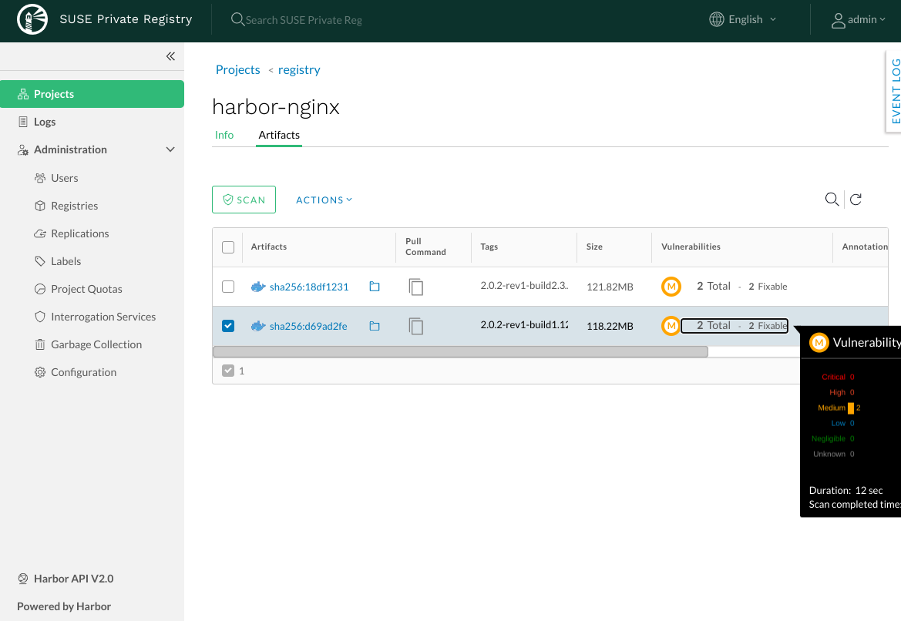
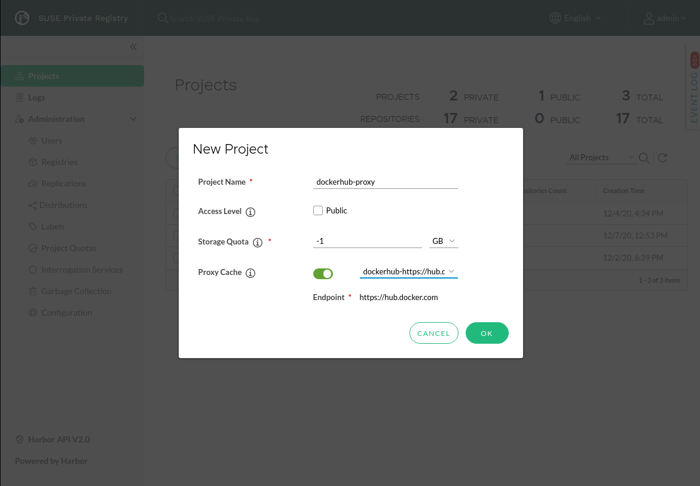

Abstract
This guide provides instructions how to deploy and maintain a private container registry using Harbor 2.1.
Disclaimer: Documents published as part of the SUSE Best Practices series have been contributed voluntarily by SUSE employees and third parties. They are meant to serve as examples of how particular actions can be performed. They have been compiled with utmost attention to detail. However, this does not guarantee complete accuracy. SUSE cannot verify that actions described in these documents do what is claimed or whether actions described have unintended consequences. SUSE LLC, its affiliates, the authors, and the translators may not be held liable for possible errors or the consequences thereof.
Table of Contents
Cloud Native Application Development and Delivery methods require a registry and a CI/CD (Continuous Integration/Delivery) instance for the development and production of container images. In many cases, using a public container registry and CI/CD does not allow for enough control. A private registry can provide that level of control.
SUSE Private Registry Powered by Harbor 2.1 is a fully OCI-compliant container-image registry solution that gives the development team a place to manage, deploy and sign container images (using Notary), fully control access to OCI container images and helm charts via RBAC (role-based access control), and do vulnerability scanning with Trivy. It is based on Harbor on top of SUSE Linux Enterprise Server.
See Table 2, “Supported Features” for a complete list of supported features.
SUSE Private Registry Powered by Harbor 2.1 can only be deployed on top of a Kubernetes cluster.
Kubernetes 1.17 or higher
SUSE CaaS Platform 4.5.x (or higher)
K3s
RKE2
or
A supported public Kubernetes cloud provider (see Table 1, “Supported deployment options” Options)
SUSE Private Registry can only be deployed via the Helm chart.
Helm 3.2 (or higher) required
Use https://software.opensuse.org/package/helm to find a build for your distribution.
The following types of storage are required for SUSE Private Registry Powered by Harbor 2.1:
Kubernetes persistent volumes
SUSE Private Registry internal stateful components require persistent volumes to store their data in a way that survives pod restarts. A default Kubernetes
StorageClassis needed to dynamically provision the volumes. Alternatively, explicitStorageClassvalues may be configured for each component.
Kubernetes persistent shared volumes
In addition to regular persistent volumes, a Kubernetes
StorageClassthat supportsReadWriteManyaccess mode is required to deploy theregistrycomponent - the component providing the OCI registry API and responsible for storing OCI artifacts - in a highly-available and scalable setup. If such aStorageClassisn’t available in your Kubernetes cluster, an external storage backend may be used instead (see next point). Ultimately, a regularReadWriteOnceKubernetesStorageClassmay still be used for theregistrycomponent, but with HA and scalability features selectively disabled.
External storage for OCI artifacts
SUSE Private Registry may optionally be configured to store OCI artifacts (e.g. container images and charts) in an external storage backend such as Azure Blob Storage or Amazon S3, instead of the Kubernetes provided persistent volumes.
Note
SUSE CaaS Platform 4.5 provides only very limited options of supported StorageClass configurations.
Refer to SUSE CaaS Platform 4.5 Administration Guide: Storage.
For public cloud deployments it is recommended to use the available hosted solutions:
Azure Blob Storage or Amazon S3 for storing OCI artifacts
The Azure File Share or Amazon EFS Kubernetes
StorageClassfor theregistrycomponent, unless external storage is used to store OCI artifactsThe Azure Managed Disk or Amazon EBS Kubernetes
StorageClassfor other components that require persistent storage
Refer to the table in Table 1, “Supported deployment options” for more details.
The default and recommended way of installing SUSE Private Registry using the helm chart is to employ an ingress service to expose the Harbor service. The Kubernetes cluster where the chart is being deployed needs to have an ingress controller enabled:
For SUSE CaaS Platform v4.5, check how to deploy Nginx based Ingress controller with SUSE CaaS Platform.
For K3s, traefik ingress controller is deployed by default. It is also possible to disable traefik when installing K3s and install different ingress controller, e.g. Nginx based Ingress controller the same way as for SUSE CaaS Platform.
For AKS, the Ingress controller recommended for SUSE Private Registry is the NGINX ingress controller. Follow the documentation on Creating an Ingress Controller in AKS, or Creating an HTTPS ingress controller on AKS. The latter also provides extended instructions about providing support for resolvable FQDNs and generating TLS certificates, which are also SUSE Private Registry requirements.
For EKS, the Ingress controller recommended for SUSE Private Registry is the ALB ingress controller. Follow the documentation on Creating an ALB Ingress Controller on EKS.
Alternatively, the Harbor service may be exposed directly via a dedicated Kubernetes LoadBalancer, without requiring an Ingress controller.
If the Kubernetes Ingress is the chosen option for exposing the SUSE Private Registry services, it is also required to associate FQDN entries with the exposed SUSE Private Registry endpoints: one FQDN for the Harbor UI/API and another one for the image signing (notary) service, if enabled.
Both these FQDNs need to be resolvable to the external IP address allocated for the Kubernetes Ingress controller and they must not have the same value. Setting this up depends largely on the host infrastructure and the Kubernetes distribution on top of which SUSE Private Registry is installed. Providing complete instructions on allocating FQDNs and configuring external DNS services to resolve them is outside the scope of this document, but some suggestions are provided in this section.
For simple deployments, an external public service such as nip.io may be used to provide quick DNS mapping for IP addresses without requiring additional services or infrastructure configuration changes. For example, if the external IP address allocated to the Kubernetes Ingress Controller is 10.86.0.237, then the FQDNs used for the Harbor UI/API and notary endpoints might be:
harbor.10.86.0.237.nip.io
notary.10.86.0.237.nip.io
For AKS, a DNS zone may be configured and used as a custom domain for all FQDNs associated with the Ingress. Follow the steps documented in Creating an HTTPS ingress controller on AKS on associating an Azure DNS zone with the external IP allocated for an Ingress Controller.
For example, if the Azure DNS zone mapped to the external IP allocated to the Kubernetes Ingress controller is MY_CUSTOM_DOMAIN, then the FQDNs used for the Harbor UI/API and notary endpoints might be:
harbor.MY_CUSTOM_DOMAIN
notary.MY_CUSTOM_DOMAIN
Important
Detailed instructions on generating TLS certificates are outside the scope of this document, but some suggestions are provided in the installation section.
By default, SUSE Private Registry is configured to auto-generate TLS certificates associated with the Harbor UI/API and Notary API FQDNs, independently of the way used to expose the services. While this option simplifies the installation process, it also uses self-signed CA certificates that must be explicitly installed on every machine where clients will interact with the registry. For situation when this is not desirable, such as production deployments, custom certificates need to be generated ahead of time and provided during installation.
The custom certificates must reflect the FQDNs, domain name, or external IP address that will be used by clients to access the SUSE Private Registry services. For example, if a Kubernetes Ingress is used, one TLS certificate will be required for the Harbor UI/API FQDN and another one for the Notary FQDN. The second option is to create a single certificate to be used for both services, with the SAN value configured to match both FQDNs. A third option is to create a single certificate for the entire subdomain used to derive both FQDNs.
The cert-manager open source solution could be leveraged to manage certificates.
This type of Kubernetes Ingress Controller supports configuring a default SSL certificate that may be used in common for all services that use it. Detailed instructions on how to do that are available in the official NGINX Ingress Controller documentation.
AWS includes an AWS Certificate Manager service that can be used to manage certificates. The ALB Ingress Controller also supports configuring a default SSL certificate associated with the underlying Application Load Balancer. Detailed instructions on how to do that are available in the Creating an HTTPS Listener for an ALB documentation.
An internal database is provided with the SUSE Private Registry helm chart, but this builtin service is not highly available nor scalable. For production deployments running in public cloud, it is recommended that a highly-available and scalable managed PostgreSQL database instance be created and configured as an external database for SUSE Private Registry. This section covers only high-level instructions on creating a managed PostgreSQL database instance for Azure and AWS. For detailed instructions, please refer to the official documentation:
To deploy Azure PosgreSQL server, use az command line client like this:
az postgres server create --location germanywestcentral --resource-group <azure-resource-group> --name <azure-postgres-server> --admin-user <admin-user> --admin-password <admin-password> --sku-name B_Gen5_2
Alternatively, the database server can be created from the Azure Portal page.
After the server creation, it is necessary to manually create the following empty databases: registry, notary_server and notary_signer.
This can be achieved using the az command line client like this:
az postgres db create --resource-group <azure-resource-group> --server-name <azure-postgres-server> -name registry az postgres db create --resource-group <azure-resource-group> --server-name <azure-postgres-server> -name notary_server az postgres db create --resource-group <azure-resource-group> --server-name <azure-postgres-server> -name notary_signer
Do not forget to set up correct firewall rules so that other services are able to access the database.
For example, one can setup a rule to enable access from all other Azure services using the command line client:
az postgres server firewall-rule create --resource-group <azure-resource-group> --server-name <azure-postgres-server> -n azure-services-rule --start-ip-address 0.0.0.0 --end-ip-address 0.0.0.0
When accessing the database from an on-premise Kubernetes cluster, set up the firewall rules accordingly. You can adapt Firewall rules from Azure Portal as well.
Find out the URL of the database as well as the username and password that was used when creating the database server.
For Azure, the host name will likely look like <postgres-server>.postgres.database.azure.com.
These will be required during the SUSE Private Registry installation. You can also find it in the Azure Portal in the Connection Strings section.
SUSE Private Registry is compatible with Amazon RDS using the Amazon Aurora-PostgreSQL or PostgreSQL service.
The RDS database can be created from the AWS RDS Management Console or by using the aws cli using
the following command:
aws rds create-db-instance
--engine postgres \
--allocated-storage 25 \
--db-instance-class db.t3.medium \
--db-security-groups <mydbsecuritygroup> \
--db-subnet-group <mydbsubnetgroup> \
--master-username <masterawsuser> \
--master-user-password <masteruserpassword> \
--backup-retention-period 3When accessing the database from an on-premise Kubernetes cluster, set up the firewall rules accordingly. You can adapt Firewall rules from AWS Management Console as well.
Please record the URL of the database as well as the username and password that was used when creating the database server.
These will be required during the SUSE Private Registry installation.
After the server creation, it is necessary to manually create the following empty databases: registry, notary_server and notary_signer.
Use your favorite database client tool (like psql) to connect to the database server and create these databases.
Important
Securing connections to the external Redis with TLS/SSL is currently not supported.
An internal Redis service is provided with the SUSE Private Registry helm chart, but this builtin service is not highly available nor scalable. For production deployments running in public cloud, it is recommended that a highly-available and scalable managed Redis instance be created and configured as an external Redis for SUSE Private Registry. This section covers only high-level instructions on creating a managed Redis instance for Azure and AWS.
For detailed instructions, please refer to the official documentation:
Azure: Azure Cache for Redis
As an alternative, the SUSE Redis operator may be used to deploy a Kubernetes managed Redis service and not rely on a public cloud managed Redis service. This is covered in the SUSE Private Registry installation instructions.
To deploy Redis Cache in Azure, you can use the command line client and run it like this:
az redis create --location <azure-location> --name <azure-redis-cache> --resource-group <azure-resource-group> --sku Basic --vm-size c0 --enable-non-ssl-port
Use the right value with your resource group and location. The option for enabling non-ssl port is necessary, as Harbor does not support SSL connection to Redis.
Use the options for sku and vm-size options that fit your needs.
Using the name you will provide as <azure-redis-chache>, Azure will generate DNS name for your Redis Cache in the form of <azure-redis-cache>.redis.cache.windows.net.
Use this address for the addr key when adapting the harbor-values.yaml file later.
Refer to [install-external-redis] in the Deployment section.
Once the Redis Cache is created, obtain the access key that you will need for connection. List the access keys using the CLI this way:
az redis list-keys --name <azure-redis-cache> --resource-group <azure-resource-group>
Alternatively, the Redis Cache can be created from Azure Portal page. The access keys can be found in the Settings/Access keys section.
To deploy Redis Cache in AWS, you can use the aws command line client and run it like this:
aws elasticache create-cache-cluster \ --cache-cluster-id my-cluster \ --cache-node-type cache.t3.small \ --engine redis \ --num-cache-nodes 1
For enabling High Availability, the Redis Cache needs to be added to a ElastiCache cluster. Please read the AWS CLI documentation for further details.
Refer to [install-external-redis] in the Deployment section.
Alternatively, the Redis Cache can be created from AWS Management Console.
To install SUSE Private Registry with all high availability features fully enabled, or to be able to fully scale out an existing SUSE Private Registry deployment, the number of replicas for every registry component needs to be configured to 2 or more.
Use a ReplicaCount value of 2 or higher
The replica count can be configured in the Helm chart individually for every component.
HA Ingress Controller
If a Kubernetes Ingress controller is used to expose the SUSE Private Registry services, use a replica count value of 2 or higher for the ingress controller deployment.
Use external storage, or a
ReadWriteManyaccess mode KubernetesStorageClassto store OCI artifactsIf the SUSE Private Registry
registryinternal component is configured to use Kubernetes persistent volumes to store OCI artifacts instead of an external storage service such as Azure Blob Storage or Amazon S3, increasing the number of replicas is only possible if the KubernetesStorageClasssupports theReadWriteManyaccess mode. High availability may be explicitly disabled only for this component, if such aStorageClasscannot be provided.The internal database and redis component do not support high availability.
Database can only be HA when SUSE Private Registry is connected to an external HA database setup
For the database component, the only supported way to achieve High Availability is to connect SUSE Private Registry to an external hosted database service, such as Amazon RDS/PostgreSQL or Azure Database for PostgreSQL, deployed in a highly available setup. See [install-external-database] in the Deployment section.
To enable high availability for the Redis component, use one of the following:
Connect to an external HA redis service (Azure Cache / Amazon ElastiCache)
Connect SUSE Private Registry to an external hosted redis service, such as Amazon ElastiCache for Redis or Azure Cache for Redis - deployed in a highly available setup. This is the equivalent to the database solution mentioned above.
or
Install the SUSE Redis operator on the same cluster, as the de facto "external" redis service
Install a highly available Redis cluster via the SUSE Redis operator Helm chart into the same Kubernetes cluster where SUSE Private Registry is running, then connect the SUSE Private Registry to it as an external redis service. Read more about installing Redis operator in the Deployment section.
Ensure you have
kubectlandhelmv3 installed and check that you have access to the target Kubernetes cluster where SUSE Private Registry will be installed.Decide between using a Kubernetes Ingress or just a Load Balancer to expose the SUSE Private Registry services.
If Kubernetes Ingress is the chosen option, ensure that:
You have an Ingress Controller set up in the target Kubernetes cluster.
You prepare two resolvable FQDN values:
One for the Harbor UI/API.
One for the Notary API (only if
Notarywill be enabled).
If using just a LoadBalancer, ensure that you have one of the following:
A predefined external IP address that can be associated with the Load Balancer service used to expose the SUSE Private Registry services.
An FQDN value that, later on, can be mapped in the external DNS to the external IP address dynamically allocated to the Load Balancer service during installation.
For the Harbor UI/API and Notary API, choose between using auto-generated TLS certificates or providing your own custom TLS certificates. If using your own, have the certificates ready.
Choose the persistent storage back-end to store OCI artifacts: a Kubernetes
StorageClass, or one of the external storage services available from public-cloud providers.Verify that the target Kubernetes cluster provides the required
StorageClass(es). AStorageClasswithReadWriteManyaccess mode is required to fully enable and scalability for theregistrySUSE Private Registry component, unless an external storage service is used to store OCI artifacts.Choose between using an internal or external database service.
The internal database service does not support high availability and scalability, and is therefore not recommended for production.
If you use an external database service instead, prepare it separately beforehand.
Choose between using an internal or external Redis service. Similarly to the database:
The internal Redis service does not support high availability and scalability and is not recommended for production.
Similarly, if you will use an external, public-cloud-managed Redis service, you must prepare it separately beforehand.
If you prefer to use the SUSE
redis-haoperator service, installation instructions are included in the SUSE Private Registry installation steps covered this section.
Optionally, prepare a GitHub personal authentication token, in order to prevent rate-limiting problems when
trivydownloads its vulnerability database.Determine resource requests and limits based on your Kubernetes cluster setup.
Optionally, prepare the Service Accounts to use for Harbor components.
Download the Helm chart from the official SUSE repository:
export HELM_EXPERIMENTAL_OCI=1 # download a chart from public registry helm chart pull registry.suse.com/harbor/harbor:1.5 # export the chart to local directory helm chart export registry.suse.com/harbor/harbor:1.5
Make sure
KUBECONFIGis set correctlyWhen installing on SUSE CaaS Platform, it is expected that the
KUBECONFIGenvironment variable is set correctly pointing to the Kubernetes cluster.When installing into hosted Kubernetes clusters such as EKS or AKS, configuration must be fetched first so the following
kubectland helm commands work correctly.For AKS, it is possible to use the
azcommand line tool to get thekubeconfig:az aks get-credentials --resource-group <azure-resource-group> --name <aks-cluster-name> --file kubeconfig.yaml export KUBECONFIG=<full path to kubeconfig.yaml>
For EKS, the
awscommand line tool can be used to generate thekubeconfig:aws eks --region <region-code> update-kubeconfig --name <eks-cluster_name> --kubeconfig kubeconfig.yaml export KUBECONFIG=<full path to kubeconfig.yaml>
Prepare a
harbor-values.yamlfile to specify custom SUSE Private Registry configuration valuesWarning
The default configuration provided with the SUSE Private Registry helm chart is not suited for production use!
A separate YAML file (referred to as the
harbor-values.yamlfile in the following sections) needs to be populated with customized configuration values to be used during installation. The exact configuration options that can be customized, and the values that they can take, are covered in detail in the next installation steps.Tip
The full list of configuration options and default values that can be overridden in
harbor-values.yamlis included in the helm chart itself, and can be viewed in YAML format by running the following command:helm show values harbor
It can also be used as a YAML template for configuration values that need to be customized, although it is recommended to keep only the configuration options that are changed from their default values in
harbor-values.yaml, to allow default configuration changes to be introduced during upgrades.Important
The
harbor-values.yamlfile prepared and used during installation is the source of truth for the SUSE Private Registry configuration.It will also be required for some administrative operations, such as subsequent configuration changes and upgrades. Make sure to preserve this file in a safe place, preferably under version control, and to update it with every configuration change that is subsequently made to the deployed SUSE Private Registry instance.
(Optional) Disable unnecessary components
By default, SUSE Private Registry has all supported components enabled. Some components may be disabled in the configuration, if they are not required:
trivy- disable if you do not require the security-vulnerability-scanning feature.notary- disable if you do not require the artifact-signing feature.
To disable unnecessary components, set the relevant configuration options to false in
harbor-values.yaml:harbor-values.yaml.
trivy: enabled: false notary: enabled: false
Configure a way to expose the SUSE Private Registry UI and public APIs
The default and recommended way to expose the SUSE Private Registry services to be consumed from outside the Kubernetes cluster is to use a Kubernetes Ingress. This requires that a Kubernetes Ingress controller is already configured in your cluster and resolvable FQDNs to be prepared for the Harbor UI/API and the Notary API services (if enabled). Alternatively, services may be exposed using a Kubernetes LoadBalancer instead.
Expose SUSE Private Registry using a Kubernetes Ingress
This option assumes a Kubernetes Ingress Controller is already configured for your Kubernetes cluster, as described in the the section called “Ingress” section. Update
harbor-values.yamlwith the following configuration values:harbor-values.yaml.
expose: # Set the way how to expose the service. Default value is "ingress". ingress: hosts: core: "<core_fqdn>" notary: "<notary_fqdn>" # The external URL for Harbor core service. It is used to # 1) populate the docker/helm commands showed on portal # 2) populate the token service URL returned to docker/Notary client # # Format: protocol://domain[:port]. Usually: # 1) if "expose.type" is "ingress", the "domain" should be # the value of "expose.ingress.hosts.core" # # If Harbor is deployed behind the proxy, set it as the URL of proxy externalURL: "https://<core_fqdn>"Replace
<core_fqdn>and<notary_fqdn>values with the resolvable FQDN values that were prepared as detailed in the the section called “Requirements” section. If the Notary service was not enabled in the configuration, the<notary_fqdn>entry may be omitted. Theharbor-values.yamlconfiguration would look like this, if, for example, a public service like nip.io was used to provide FQDNs:harbor-values.yaml.
expose: ingress: hosts: core: harbor.10.86.0.237.nip.io notary: notary.10.86.0.237.nip.io externalURL: "https://harbor.10.86.0.237.nip.io"Depending on which Kubernetes Ingress Controller is used, you may need to add additional annotations to the SUSE Private Registry Ingress configuration:
harbor-values.yaml.
expose: ingress: ... annotations: # To be used for the nginx ingress on AKS: kubernetes.io/ingress.class: nginx # To be used for the ALB ingress on EKS: kubernetes.io/ingress.class: albExpose SUSE Private Registry using a Kubernetes LoadBalancer
Update the
harbor-values.yamlconfiguration file with the following configuration values:harbor-values.yaml.
expose: type: loadBalancer loadBalancer: # Set the IP if the LoadBalancer supports assigning IP IP: "" # The external URL for Harbor core service. It is used to # 1) populate the docker/helm commands showed on portal # 2) populate the token service URL returned to docker/Notary client # # Format: protocol://domain[:port]. Usually: # 1) if "expose.type" is "ingress", the "domain" should be # the value of "expose.ingress.hosts.core" # # If Harbor is deployed behind the proxy, set it as the URL of proxy externalURL: "https://<harbor_fqdn_or_ip_addr>"You must set the
<harbor_fqdn_or_ip_addr>value to an FQDN that can be resolved to the external IP address allocated to the Harbor Load Balancer service. Alternatively, if the LoadBalancer solution used for the underlying Kubernetes distribution supports assigning an IP address beforehand, you can set both theexpose.loadBalancer.IPconfiguration option and the<harbor_fqdn>value to a predefined external IP address.
Configure external TLS and certificates
TLS certificates are required to secure access to the SUSE Private Registry services that are exposed for external consumption - the Harbor UI/API and the Notary API (if Notary is enabled). These certificates may either be generated automatically during installation (default), or provided as Kubernetes secrets, or configured beforehand as the default TLS certificate for the Kubernetes Ingress Controller used to expose the services, as explained in the TLS Certificates requirements (the section called “TLS Certificates”) section.
Auto-generated certificates
This is the default helm chart setting. If an Ingress was used to expose the SUSE Private Registry services, the FQDN values configured for the ingress will be used to generate the TLS certificates automatically. If using a LoadBalancer to expose the services instead of Ingress, please also set the
commonNameoption to the pre-allocated external IP address or the FQDN value that will be resolved to it:harbor-values.yaml.
expose: .. tls: enabled: true # The source of the tls certificate. Set it as "auto", "secret" # or "none" and fill the information in the corresponding section # 1) auto: generate the tls certificate automatically # 2) secret: read the tls certificate from the specified secret. # The tls certificate can be generated manually or by cert manager # 3) none: configure no tls certificate for the ingress. If the default # tls certificate is configured in the ingress controller, choose this option certSource: auto auto: # The common name used to generate the certificate, it's necessary # when the type isn't "ingress" commonName: "<harbor_fqdn_or_ip_addr>"Custom certificates
One or two custom certificates are required for exposed SUSE Private Registry services: one for the Harbor UI/API and another one for the Notary API (required only if Notary is enabled). The certificates need to reflect the FQDN values or external IP address values used at the previous step to configure the Kubernete Ingress or LoadBalancer service exposure settings. The helm chart also supports using a single certificate instead of two, as long as the CN or SAN certificate field values match both FQDNs. The certificates need to be supplied in the form of Kubernetes secrets:
kubectl create secret tls -n registry <harbor-tls-secret> --key ${HARBOR_CERT_KEY_FILE} --cert ${HARBOR_CERT_FILE} kubectl create secret tls -n registry <notary-tls-secret> --key ${NOTARY_CERT_KEY_FILE} --cert ${NOTARY_CERT_FILE}In case the certificate has intermediate CAs, you can bundle them into the CERT_FILE prior creating the secret, e.g.:
cat $CERT_FILE $bundle_ca_file > bundled_cert_file kubectl create secret tls -n registry <tls-secret> --key ${KEY_FILE} --cert bundled_cert_fileharbor-values.yaml.
expose: .. tls: enabled: true # The source of the tls certificate. Set it as "auto", "secret" # or "none" and fill the information in the corresponding section # 1) auto: generate the tls certificate automatically # 2) secret: read the tls certificate from the specified secret. # The tls certificate can be generated manually or by cert manager # 3) none: configure no tls certificate for the ingress. If the default # tls certificate is configured in the ingress controller, choose this option certSource: secret secret: # The name of secret which contains keys named: # "tls.crt" - the certificate # "tls.key" - the private key secretName: "<harbor-tls-secret>" # The name of secret which contains keys named: # "tls.crt" - the certificate # "tls.key" - the private key # Only needed when the "expose.type" is "ingress". notarySecretName: "<notary-tls-secret>"Default Ingress certificate
If a default TLS certificate has been set up for the Kubernetes Ingress Controller earlier, as covered in the TLS Certificates section, certificates need not be explicitly supplied during the SUSE Private Registry installation. It is sufficient to set the
tls.certSourceoption tonone:harbor-values.yaml.
expose: .. tls: enabled: true # The source of the tls certificate. Set it as "auto", "secret" # or "none" and fill the information in the corresponding section # 1) auto: generate the tls certificate automatically # 2) secret: read the tls certificate from the specified secret. # The tls certificate can be generated manually or by cert manager # 3) none: configure no tls certificate for the ingress. If the default # tls certificate is configured in the ingress controller, choose this option certSource: none
Configure internal TLS
In addition to securing external connections to exposed services, SUSE Private Registry also supports using TLS to secure internal communication between its components. TLS certificates will be generated automatically for this purpose. Enabling internal TLS is optional, but highly recommended:
harbor-values.yaml.
internalTLS: enabled: true
Important
Internal TLS support does not yet cover the internal database and Redis services.
If SUSE Private Registry is deployed in K3s, note that unmodified Traefik (the default K3s ingress controller) will not work with automatically-generated certificates. You must configure Traefik not to verify the backend SSL certificate (
insecureSkipVerify = trueoption). Learn how to modify Traefik settings in the upstream documentation.For example, with K3s version 1.19 and newer, it is possible to use this kind of modification for the Traefik helm chart, then place it into the K3s manifest directory:
traefik-config.yaml.
apiVersion: helm.cattle.io/v1 kind: HelmChartConfig metadata: name: traefik namespace: kube-system spec: valuesContent: |- ssl: insecureSkipVerify: trueConfigure Persistent Storage
Configure Persistent Volumes
By default, persistent volumes are enabled for all stateful components of SUSE Private Registry. However, a default
StorageClassmust be configured in the Kubernetes cluster to be able to provision volumes dynamically. Alternatively, you can configure explicitStorageClassvalues for each component.For each component that uses persistent storage, you can configure the following settings:
storageClass: Specify the "storageClass" used to provision the volume; if empty, the defaultStorageClasswill be used (default:empty).accessMode: Volumes can be mounted on a container in any way supported by the storage provider. Valid values are:ReadWriteOnce: the volume can be mounted as read-write by a single containerReadWriteMany: the volume can be mounted as read-write by many containers. This is only required for theregistrycomponent, when configured in mode and using a persistent volume to store OCI artifacts. If an external storage service is used to store OCI artifacts, or if aReadWriteManyStorageClassisn’t available in your Kubernetes cluster, you should not use this value. (default:ReadWriteOnce)
size: the size of the volume to be provisioned (e.g. 5Gi for 5 gigabytes). Default values vary by component:
registry: 5Gi
database: 1Gi
redis: 1Gi
trivy: 5Gi
Warning
The default volume sizes provided by SUSE Private Registry are not recommended for production.
We recommend careful planning and setting the volume sizes according to the expected usage. Expanding in-use persistent-volume claims is only supported by some storage providers, and in some cases it will require restarting the pods, which will impact service availability.
For configuring persistent storage, update
harbor-values.yamlwith the following configuration, and set the values accordingly:harbor-values.yaml.
persistence: persistentVolumeClaim: registry: storageClass: "" accessMode: ReadWriteMany size: database: storageClass: "" size: redis: storageClass: "" size: trivy: storageClass: "" size:Using external services
The above settings will be ignored and may be omitted for components configured to use an external service (
database,redis), and for theregistrycomponent when external storage is configured for OCI artifacts.Warning
If a Kubernetes persistent volume is configured to store OCI artifacts instead of an external storage service, and if your Kubernetes cluster does not provide a
StorageClasswithReadWriteManyaccess mode capabilities, then theupdateStrategy.typeoption must set toRecreatein theharbor-values.yamlfile. Otherwise, runninghelm upgradeto apply subsequent configuration changes or to perform upgrades will result in failure:# The update strategy for deployments with persistent volumes (registry): "RollingUpdate" or "Recreate" # Set it as "Recreate" when "RWM" for volumes isn't supported updateStrategy: type: Recreate
Configure External Storage for OCI Artifacts
The default option for storing OCI artifacts, such as container images and helm charts, is using a persistent volume provided by the default
storageClassof your Kubernetes cluster (as described on the previous section). However, you can configure SUSE Private Registry to use an external storage solution such as Amazon S3 or Azure Blob Storage to store those artifacts.For example, for Azure Blob Storage, you must pre-configure an Azure Storage Account and Azure Storage Container. Using the
azcommand line client, execute the following commands to create and fetch necessary resources:az storage account create --resource-group <azure-resource-group> --name <azure-storage-account-name> az storage account keys list --resource-group <azure-resource-group> --account-name <azure-storage-account-name> -o tsv | head -n 1 | cut -f 3 az storage container create --account-name <azure-storage-account-name> --name <azure-storage-container-name> --auth-mode key
Then, you must configure the "imageChartStorage" section in
harbor-values.yamlas follows:harbor-values.yaml.
persistence: ... imageChartStorage: type: azure azure: accountname: <azure-storage-account-name> accountkey: <azure-storage-account-key> container: <azure-storage-container-name>For Amazon S3, the process is similar. The
imageChartStoragesection inharbor-values.yamlwill look like this:harbor-values.yaml.
persistence: ... imageChartStorage: type: s3 region: <aws-region> bucket: <aws-s3-bucket-name> accesskey: <aws-account-access-key> secretkey: <aws-account-secret-key>
(Optional) Configure a GitHub authentication token for Trivy
If the
Trivysecurity vulnerability scanner service is enabled, we recommend generating a GitHub personal authentication token and supplying it in theharbor-values.yamltrivy configuration section, to prevent issues with the API rate-limiting that GitHub enforces on unauthenticated requests:harbor-values.yaml.
trivy: ... gitHubToken: "<github-token-value>"
(Optional) Configure parameters
By default, SUSE Private Registry uses a replica count (that is, the number of redundant pods providing the same service) value of 1 for all its components. To have a highly-available deployment, configure a
ReplicaCountvalue of at least 2 for enabled services inharbor-values.yaml:harbor-values.yaml.
portal: replicas: 3 core: replicas: 3 # Only enabled when using a LoadBalancer instead of Ingress to expose services nginx: replicas: 3 jobservice: replicas: 3 registry: replicas: 3 trivy: replicas: 3 notary: server: replicas: 3 signer: replicas: 3Warning
You must have a Kubernetes
StorageClasswithReadWriteManyaccess mode to enable for the SUSE Private Registryregistrycomponent, when a Kubernetes persistent volume is used as the storage back-end for OCI artifacts.If a
StorageClasswithReadWriteManyaccess is not available for your Kubernetes cluster, setting the replica count to a value higher than 1 for theregistrycomponent will result in installation failure. Furthermore, usinghelm upgradeto apply subsequent configuration changes or to perform upgrades will also result in failures without aReadWriteManyaccess modeStorageClass. To prevent that, ensure theupdateStrategy.typeoption is set toRecreatein theharbor-values.yamlfile:harbor-values.yaml.
# The update strategy for deployments with persistent volumes(registry): "RollingUpdate" or "Recreate" # Set it as "Recreate" when "RWM" for volumes isn't supported updateStrategy: type: Recreate
(Optional) External Database Setup
We recommend an external database to deploy SUSE Private Registry in a fully highly-available and scalable setup. This section assumes a managed PostgreSQL database instance has already been setup, either in Azure or AWS, as covered in the the section called “External PostgreSQL Database”.
Connect to an Azure PostgreSQL database
Add the following section to the
harbor-values.yamlfile and fill it with information reflecting the Azure PostgreSQL database instance previously configured as an external database:harbor-values.yaml.
database: type: external external: host: <database-fully-qualified-hostname> port: "5432" username: <admin-user>@<database-hostname> password: <admin-password> # "disable" - No SSL # "require" - Always SSL (skip verification) # "verify-ca" - Always SSL (verify that the certificate presented by the # server was signed by a trusted CA) # "verify-full" - Always SSL (verify that the certification presented by the # server was signed by a trusted CA and the server host name matches the one # in the certificate) sslmode: "verify-full"Connect to an AWS PostgreSQL database
Add the following section to
harbor-values.yamland fill it with information reflecting the AWS PostgreSQL database instance previously configured as an external database:harbor-values.yaml.
database: type: external external: host: <database-fully-qualified-hostname> port: "5432" username: <admin-user>@<database-hostname> password: <admin-password> # "disable" - No SSL # "require" - Always SSL (skip verification) # "verify-ca" - Always SSL (verify that the certificate presented by the # server was signed by a trusted CA) # "verify-full" - Always SSL (verify that the certification presented by the # server was signed by a trusted CA and the server host name matches the one # in the certificate) sslmode: "verify-full"
(Optional) Install Redis Operator
As mentioned above, Redis Operator provides High Availability to the Redis component of SUSE Private Registry. It can be installed into the same Kubernetes cluster as SUSE Private Registry. The installation of Redis operator is also done via a Helm chart, and must happen before the installation of SUSE Private Registry.
Install Redis operator in its own Kubernetes namespace using the Helm chart:
export HELM_EXPERIMENTAL_OCI=1 helm chart pull registry.suse.com/harbor/redis-operator:3.1 helm chart export registry.suse.com/harbor/redis-operator:3.1 kubectl create namespace redis-operator helm -n redis-operator install harbor-redis ./redisoperator
Configure
RedisFailoverobject:The Redis HA configuration needs to be specified in the
redisfailoversection ofharbor-values.yaml. The following is an example configuration:harbor-values.yaml.
redisfailover: enabled: true name: harbor-redisfailover
Configure SUSE Private Registry to be connected to the external Redis
Extend the
harbor-values.yamlfile with the configuration specified below.harbor-values.yaml.
redis: type: external external: addr: rfs-harbor-redisfailover:26379 sentinelMasterSet: mymaster
mymasteris a predefined value of redisfailover deployment and cannot be changed.(Optional) Set up own password
By default, if no secret and password are provided, the SUSE Private Registry Helm chart will generate a password. A custom password can also be provided:
kubectl -n registry create secret generic redis-auth --from-literal=password="<password-value>"
harbor-values.yaml.
redis: type: external external: addr: rfs-harbor-redisfailover:26379 sentinelMasterSet: mymaster password: <password-value>(Optional) Configure Redisfailover deployment
By default, the Redisfailover deployment has three sentinel replicas, three redis replicas, and will keep the data when the Helm chart is uninstalled. This behavior can be configured in the
redisfailoversection.
(Optional) External Redis Setup
We recommend an external Redis to deploy SUSE Private Registry in a fully highly-available and scalable setup. When deployed in AKS or EKS, as an alternative to using the Redis Operator, SUSE Private Registry may instead be connected to a managed Redis instance running in public cloud. This section assumes a managed Redis instance has already been setup, either in Azure or AWS, as covered in the External Redis requirements section.
Connect to an Azure Cache for Redis instance
Add the following section to the
harbor-values.yamlfile and fill it with information reflecting the Azure Cache for Redis instance previously prepared. As mentioned above in the the section called “Azure Cache for Redis”, the address will have the form of<azure-redis-cache>.redis.cache.windows.net.harbor-values.yaml.
redis: type: external external: addr: "192.168.0.2:6379" password: access-key Replace
access-keywith the access key retrieved after creating the Azure Cache for Redis instance.Connect to an Amazon ElastiCache Redis service
Add the following section to
harbor-values.yamland fill it with information reflecting the Amazon ElastiCache Redis instance that you previously prepared:harbor-values.yaml.
redis: type: external external: addr: "192.168.0.2:6379" password: "" Add password if configured manually (not the default) in AWS ElastiCache.
(Optional) Setup Resource Requests and Limits
It is a good practice to specify resource requests and limit values. For each Harbor component, it is possible to specify a minimal resource value — that is, the amount of CPU units and memory it should get — and a limit value, so that Kubernetes knows the resources given to a component cannot exceed the limit. These per-component values are used for all containers that are created for a given Harbor component.
For example, add the following section to
harbor-values.yamlto specify that the containers from the core component should get at least 0.1 CPU, 256 MiB of RAM, and not more than 1 CPU and 1 GiB of memory:harbor-values.yaml.
core: resources: requests: memory: 256Mi cpu: 100m limits: cpu: 1 memory: 1GiRead more about Resource management in the upstream documentation.
(Optional) Use distinct Service Accounts
Note
You can use distinct Service Accounts for each Harbor component.
Refer to the upstream documentation to find out more about Pod Security Policies.
Without any changes, all created Pods belong to the default Service Account. For better overall cluster security, we recommend creating a Pod Security Policy that restricts the Pods to only specific actions. Then you can assign new ServiceAccounts to your Pod Security Policy using Roles and Role Bindings.
For example, if you created a
suse-registryService Account, add the following section to theharbor-values.yamlfile so that all Harbor services are associated with it:harbor-values.yaml.
nginx: serviceAccountName: "suse-registry" portal: serviceAccountName: "suse-registry" core: serviceAccountName: "suse-registry" jobservice: serviceAccountName: "suse-registry" registry: serviceAccountName: "suse-registry" trivy: serviceAccountName: "suse-registry" notary: server: serviceAccountName: "suse-registry" signer: serviceAccountName: "suse-registry" database: internal: serviceAccountName: "suse-registry" redis: internal: serviceAccountName: "suse-registry"Set up the passwords for deployment
By default, all passwords are automatically generated when installing SUSE Private Registry with the Helm chart. They can be retrieved post-installation from the created Kubernetes secrets objects. For example, to retrieve the Harbor administrator password necessary to log in into the Harbor Portal UI as admin user, run this command after the deployment is finished:
kubectl get secret suse-registry-harbor-core -n registry -o jsonpath="{.data.HARBOR_ADMIN_PASSWORD}" | base64 --decodeTo set a custom administrator password before the installation, modify your
harbor-values.yamlfile like this:harbor-config-values.yaml.
harborAdminPassword: <password-for-admin-user>
Similarly, custom passwords may be set before the installation for the database and Redis services, if configured as internal services:
harbor-config-values.yaml.
database: ... internal: password: <password-for-redis> redis: ... internal: password: <password-for-redis>Finally, deploy helm to install SUSE Private Registry
To install SUSE Private Registry as a
suse-registryrelease into the registry namespace with the custom configuration prepared inharbor-values.yamlin the previous steps, run the following command:helm -n registry install suse-registry ./harbor -f harbor-values.yaml
Once the installation is complete, Helm will provide the information about the location of the newly installed registry, e.g.:
NAME: suse-registry LAST DEPLOYED: Fri Jul 24 10:34:53 2020 NAMESPACE: registry STATUS: deployed REVISION: 1 NOTES: Please wait for several minutes for Harbor deployment to complete. Then you should be able to visit the Harbor portal at https://core.harbor.domain
You will see your
<core_fqdn>instead ofhttps://core.harbor.domain.Check the installation
You can check the status of created artifacts and see if everything is running correctly:
> kubectl -n registry get deployments NAME READY UP-TO-DATE AVAILABLE AGE suse-registry-harbor-core 1/1 1 1 17h suse-registry-harbor-jobservice 1/1 1 1 17h suse-registry-harbor-portal 1/1 1 1 17h suse-registry-harbor-registry 1/1 1 1 17h
> kubectl -n registry get pods NAME READY STATUS RESTARTS AGE suse-registry-harbor-core-c787885b6-2l7lz 1/1 Running 1 105m suse-registry-harbor-database-0 1/1 Running 0 105m suse-registry-harbor-jobservice-698fb5bb44-88mc5 1/1 Running 1 105m suse-registry-harbor-nginx-b4f7748c5-8v2rp 1/1 Running 0 105m suse-registry-harbor-portal-bff5898cc-tt9ss 1/1 Running 0 105m suse-registry-harbor-redis-0 1/1 Running 0 105m suse-registry-harbor-registry-7f65b6f87b-sqhzt 2/2 Running 0 105m suse-registry-harbor-trivy-0 1/1 Running 0 105m
After the installation is complete, please proceed with the section called “Administration” and configure an authentication method.
K3s is a lightweight Kubernetes distribution from Rancher that can be deployed on a single node.
- Testing
The customer wants to test SUSE Private Registry Powered by Harbor 2.1, but they do not have a Kubernetes cluster prepared.
- Single-node setup
A production setup for customers that want to use SUSE Private Registry Powered by Harbor 2.1, but do not want to deploy CaaSP, Racher’s RKE or any other Kubernetes cluster.
- Air-gapped environments
K3s can be deployed without access to the Internet. With SUSE Private Registry Powered by Harbor 2.1 running on such a cluster, it could for example serve as an image registry for other Kubernetes clusters in the customer’s network.
You should have Helm installed on the machine where you want to install k3s.
Make sure that you have enough disk space. Rancher does not mention any specific
requirements for disk size, so prepare at least a few gigabytes. It is possible
to put the /var/lib/rancher directory on any partition or disk where you know
that you have enough space. In case space starts to run out, you might encounter
k3s issue #1552.
Also check for the latest available stable version of k3s by consulting the releases page. We do not recommend running pre-release versions. If you encounter 404 errors trying to download packages from GitHub, this is probably due to the release of a newer version.
We recommend that you read the upstream guide on deploying k3s into an air-gapped environment.
Before you begin, download all the packages for the installation.
You will need to download three different files to install k3s.
The k3s install script. You can fetch this with the command:
curl https://get.k3s.io -o install.sh
The k3s binary (called just
k3s).The bundle of images required for basic k3s air-gapped deployment and for some optional features (such as the Traefik ingress controller). This is called
k3s-airgap-images-amd64.tar.Fetch the latter two files from: https://github.com/k3s-io/k3s/releases/latest
Fetch the images required for the SUSE Private Registry:
mkdir images for component in core nginx notary-server notary-signer trivy-adapter registryctl jobservice registry db redis; do image="registry.suse.com/harbor/harbor-$component:2.1.2"; \ docker pull $image; docker save -o "images/harbor-$component-2.1.2.tar" $image; \ done
Transfer all the files onto the air-gapped machine where k3s will run, for example using a USB key.
On that machine, prepare the images and install the binary:
sudo mkdir -p /var/lib/rancher/k3s/agent/images/ sudo cp k3s-airgap-images-amd64.tar /var/lib/rancher/k3s/agent/images/ sudo cp k3s /usr/local/bin/k3s sudo chown +x /usr/local/bin/k3s sudo chown +x /usr/local/bin/install.sh
Install k3s. It is not necessary to start the
systemdservice yet, if you want to watch the start process closely for the first timeINSTALL_K3S_SKIP_ENABLE=true INSTALL_K3S_SKIP_DOWNLOAD=true ./install.sh
Tip
The
INSTALL_K3S_SKIP_ENABLEsetting means that thesystemdservice for k3s will not be enabled and started, but you can ignore the value and actually use the service.Install the images required for the SUSE Private Registry into the k3s images directory, so that the server can import them when it starts:
sudo cp images/*.tar /var/lib/rancher/k3s/agent/images/
Start the k3s server as root.
su k3s server --write-kubeconfig-mode 644
Tip
The additional option tells
k3sto reset the permissions on/etc/rancher/k3s/k3s.yamlas it loads.To see more information, you can to pass the
--debugoption to the command, but you will receive a lot of information. Alternatively, you can start the correspondingsystemdservice:systemctl start k3s
In another window, check the start-up process. The first time will be slow, as all the images must be imported. Check the current image list with:
su k3s crictl images
Use the usual
kubectlcommand to check the state of initial deployment:su k3s kubectl get deployments
The above command talks to the default Kubernetes instance. If you want to use your own
kubectlfile, point to the appropriate config file first:export KUBECONFIG=/etc/rancher/k3s/k3s.yaml kubectl get deployments
Prepare the Trivy offline database
Trivy is the security scanner installed with Harbor. By default, it downloads the vulnerability database from GitHub. However, it can also be deployed into the air-gapped environment. Refer to the upstream guidelines for such scenarios. Here, we cover the case where Trivy is deployed with Harbor using a Helm chart.
First, on a machine with the internet access, download the offline database from https://github.com/aquasecurity/trivy-db/releases/ and move it to your air-gapped machine.
You must create a Persistent Volume where the database can be kept. For the purpose of this example, we will use the default
storageClassthat is set up for k3s, the one using the local-path provisioner. This allows us to map the Persistent Volume to a local directory on the host machine where the k3s node is running.Example of Persistent Volume and persistentVolumeClaim definitions:
pv-trivy.yaml.
apiVersion: v1 kind: PersistentVolume metadata: finalizers: - kubernetes.io/pv-protection name: trivy-pv-volume spec: accessModes: - ReadWriteOnce capacity: storage: 2Gi hostPath: # local path on my machine path: /data/trivy-pv type: DirectoryOrCreate persistentVolumeReclaimPolicy: Retain storageClassName: local-path volumeMode: Filesystem
pvc-trivy.yaml.
apiVersion: v1 kind: PersistentVolumeClaim metadata: name: trivy-pvc namespace: registry spec: accessModes: - ReadWriteOnce storageClassName: local-path resources: requests: storage: 2Gi volumeName: trivy-pv-volumeSave these files as
pv-trivy.yamlandpvc-trivy.yaml.Create the directory
/data/trivy-pv(see the value ofpathin thepv-trivy.yamlfile). Unpack the downloaded Trivy database under thetrivy/dbsubdirectory, and change the ownership of the whole directory to user and group 10000:sudo mkdir -p /data/trivy-pv/trivy/db sudo tar -zxf trivy-offline.db.tgz -C /data/trivy-pv/trivy/db/ sudo chown -R 10000:10000 /data/trivy-pv
Install SUSE Private Registry
Now you can install SUSE Private Registry the usual way. Find out the external address provided by the default ingress controller:
kubectl get services
Use the IP number to provide correct values for the core components in the Helm chart and create, for example,
harbor-config-values.yaml. Add the parts to mount the correct volume with the Trivy database.harbor-config-values.yaml.
expose: # Set the way how to expose the service. Default value is "ingress". ingress: hosts: core: "<ingress_url>" externalURL: "https://<ingress_url>" trivy: # do not download trivy DB from github: skipUpdate: true # use existing trivy PVC (prepare offline DB there) persistence: persistentVolumeClaim: trivy: existingClaim: "trivy-pvc"Fetch the Helm chart and install Harbor into the new namespace.
export HELM_EXPERIMENTAL_OCI=1 helm chart pull registry.suse.com/harbor/harbor:1.5 helm chart export registry.suse.com/harbor/harbor:1.5
Do not forget to create Kubernetes objects for the Trivy database:
kubectl create namespace registry kubectl apply -n pv-trivy.yaml kubectl apply -n pvc-trivy.yaml helm install -n negistry suse-registry ./harbor -f
The installation using Helm is fully automated and should succeed when the requirements are met. After a few seconds, the ingress controller configured path should be responding with the login screen of an admin UI, see the the section called “Administration” section.
In case of issues, please make sure all pods in registry namespace are running and all deployments are in the Ready state. If a pod fails to start, investigate the situation with your debugging tool of choice (k9s, or kubectl).
Private registry deploys in the given Kubernetes namespace multiple deployments and one statefulset, and all of them should be healthy.
As mentioned in the requirements, ingress-controller needs to be set up in your Kubernetes cluster
When accessing the web UI, the browser complains about unknown certificate.
Check the the section called “Transport Layer Security (TLS) Setup” for a solution.
Images for various SUSE Private Registry components cannot be found, and Pods are not getting created.
Make sure registry.suse.com is accessible from your network.
Pods are not starting, most of them fail with
failed to connect to databasepod error.Check the errors in the database pod. Does it complain with something like:
FailedScheduling <unknown> default-scheduler pod has unbound immediate `PersistentVolumeClaims`
(repeated 2 times)? Possible reason is that the
storageClassis missing or nostorageClassis marked as default.
With default setup, the SUSE Private Registry public APIs (the UI and the OCI registry API) will both use an auto-generated certificate. To avoid root certificate validation errors, the generated CA certificate should be installed on all hosts that will need to connect to it:
All cluster nodes, if a Kubernetes cluster will be used to pull images from the SUSE Private Registry
All machines where supported OCI clients, such as docker engine and helm v3 are running, if those clients will be used to interact with the SUSE Private Registry
The generated CA certificate is available for download in the SUSE Private Registry UI, under the Configuration / System Settings section:
 |
Install the extracted CA certificate system-wide:
su cp harbor.ca /usr/share/pki/trust/anchors/ update-ca-certificates
SUSE Private Registry User Interface can be accessed from a supported web browser at the location provided as <core_fqdn> during the installation.
Find out about the initial admin user password in [install-passwords].
 |
After the first login, you can change the administrator’s password through the web UI. Select the admin tab and select Change Password.
 |
Switching Authentication Mode
Once a user (besides the admin) is registered, or logs in when using LDAP/AD or UAA, SUSE Private Registry is locked in the current authentication mode meaning that it is not possible switch to a different authentication mode. In that way, an authentication mode should be configured as soon as SUSE Private Registry is deployed.
Harbor supports different modes for authenticating users and managing user accounts. The following authentication modes are supported by SUSE Private Registry:
Database (default): User accounts are created/managed directly in SUSE Private Registry. The user accounts are stored on the SUSE Private Registry database.
LDAP/Active Directory: SUSE Private Registry is configured to use an external external LDAP/Active Directory server for user authentication. The user accounts are created and managed by the LDAP/AD provider.
UAA: SUSE Private Registry is configured to authenticate using an external UAA provider. The user accounts are created and managed by the UAA provider.
In database authentication mode, user accounts are stored in the local database. By default, only the SUSE Private Registry system administrator can create new user accounts. However, It is also possible to configure SUSE Private Registry to allow self-registration.
Configuring SUSE Private Registry with Database authentication mode:
Log in to the SUSE Private Registry interface with an account that has system administrator privileges.
Under Administration, go to Configuration and select the Authentication tab.
Leave Auth Mode set to the default Database option.
(Optionally) Select the Allow Self-Registration check box for allowing users to register themselves in SUSE Private Registry. Self-registration is disabled by default. If enabled unregistered users can sign up for a SUSE Private Registry account by clicking Sign up for an account on the SUSE Private Registry log in page.
Important
Note that self-registration, creating users, deleting users, changing passwords, and resetting passwords is not supported in LDAP/AD authentication mode as users are managed by LDAP/AD.
When using LDAP/AD authentication, users whose credentials are stored in an external LDAP or AD server can log in to SUSE Private Registry directly. In this case, it is not necessary to create user accounts in SUSE Private Registry.
To be able to manage user authentication by using LDAP groups, it is required to enable the memberof feature on the LDAP/AD server.
With the memberof feature, the LDAP/AD user entity’s memberof attribute is updated when the group entity’s member attribute is updated, for example by adding or removing an LDAP/AD user from the LDAP/AD group.
The following steps describe how to enable LDAP/AD authentication mode:
Log in to the SUSE Private Registry interface with an account that has system administrator privileges.
Under Administration, go to Configuration and select the Authentication tab.
Use the Auth Mode drop-down menu to select LDAP.
Enter the address of the LDAP server, for example
ldaps://10.84.5.171.Enter information about the LDAP server as follows:
LDAP Search DN and LDAP Search Password: When a user logs in to SUSE Private Registry with their LDAP username and password, it uses these values to bind to the LDAP/AD server. For example,
cn=admin,dc=example.com.LDAP Base DN: SUSE Private Registry looks up the user under the LDAP Base DN entry, including the subtree. For example,
dc=example.com.LDAP Filter: The filter to search for LDAP/AD users. For example,
objectclass=user.LDAP UID: An attribute, for example uid, or cn, that is used to match a user with the username. If a match is found, the user’s password is verified by a bind request to the LDAP/AD server.
LDAP Scope: The scope to search for LDAP/AD users. Select from Subtree, Base, and OneLevel.
To be able to manage user authentication with LDAP groups, configure the group settings:
LDAP Group Base DN: The base DN from which to lookup a group in LDAP/AD. For example,
ou=groups,dc=example,dc=com.LDAP Group Filter: The filter to search for LDAP/AD groups. For example,
objectclass=groupOfNames.LDAP Group GID: The attribute used to name an LDAP/AD group. For example,
cn.LDAP Group Admin DN: All LDAP/AD users in this group DN have Harbor system administrator privileges.
LDAP Group Membership: The user attribute usd to identify a user as a member of a group. By default this is
memberof.LDAP Scope: The scope to search for LDAP/AD groups. Select from Subtree, Base, and OneLevel.
Uncheck LDAP Verify Cert if the LDAP/AD server uses a self-signed or untrusted certificate.
Click Test LDAP Server to make sure that your configuration is correct.
Click Save to complete the configuration.
By configuring UAA authentication, users whose credentials are stored in an external UAA server can log in to SUSE Private Registry directly. In this case, it is not necessary to create user accounts in SUSE Private Registry. Note that just like LDAP authentication mode, self-registration, creating users, deleting users, changing passwords, and resetting passwords are not supported in UAA authentication mode as users are managed by UAA.
The following steps describe how to configure UAA authentication mode:
Register a client account on UAA. For example, using the UAA CLI and assuming the UAA server is available at
http://10.83.7.181:8080:Configure UAA CLI to target the UAA server and login as admin:
$ uaac target http://10.83.7.181:8080/uaa
$ uaac token client get admin -s <admin_secret> # replace <admin_secret> with the secret of the admin user
Register a client account for SUSE Private Registry:
$ uaac client add suse_private_registry -s suseprivateregistrysupersecret --scope uaa.user --authorized_grant_types client_credentials,password --authorities oauth.login
Log in to the SUSE Private Registry interface with an account that has system administrator privileges.
Under Administration, go to Configuration and select the Authentication tab.
Use the Auth Mode drop-down menu to select UAA.
Enter the address of the UAA server token endpoint, for example
http://10.83.7.181:8080/uaa/oauth/tokenEnter information about the UAA client account as follows:
UAA Client ID: The client account ID. For example
suse_private_registryas created on step 1.UAA Client Secret: The client account secret. For example
suseprivateregistrysupersecretas created on step 1.
Uncheck UAA Verify Cert if the UAA server uses a self-signed or untrusted certificate.
Click Save to complete the configuration.
Updating the Registry Deployment Configuration
Changing the deployment configuration of a running SUSE Private Registry instance involves running helm upgrade in some form or other. The harbor-values.yaml file used during installation to provide the initial SUSE Private Registry configuration should be treated as the source of truth during all subsequent deployment configuration changes and upgrade operations.
For all SUSE Private Registry configuration change operations documented in this section, it is therefore highly recommended that the harbor-values.yaml be updated accordingly, and that the file be supplied to the helm upgrade command, instead of using additional --set command line arguments that are not be persisted.
Disregarding this recommendation may lead to situation in which the configuration of the running SUSE Private Registry installation is no longer in sync with the configuration described in the harbor-values.yaml file, which will cause unexpected configuration changes during upgrade operations.
Important
Some SUSE Private Registry deployment configuration changes require restarting one or several of the registry components. To reduce service downtime while configuration changes are being applied, it is recommended to run SUSE Private Registry in high-availability mode (see the section called “High Availability” for more information).
Examples of supported post-installation deployment configuration changes, some of which are further documented in the sub-sections that follow:
Enabling or disabling internal TLS
Adding custom CA certificate bundles into the trust store used by SUSE Private Registry components
Rotating TLS certificates
Increasing the size of Kubernetes persistent volumes used by SUSE Private Registry components
Changing passwords, tokens and access keys
The password for the database admin
The password for the redis default account
The github token used by trivy to regularly update the vulnerability database
Changing the update strategy used for rolling updates
Changing the scale (replica count) for SUSE Private Registry services
Changing the Kubernetes service accounts associated with SUSE Private Registry pods
Enable or disable the
notarycomponentEnable or disable
trivycomponent
The following post-installation deployment configuration changes are not supported and require a full SUSE Private Registry re-installation:
Changing the storage type for the OCI artifact storage
Changing the storage class for Kubernetes persistent volumes
Decreasing the size of Kubernetes persistent volumes used by SUSE Private Registry components
Replacing the redis service
Replacing the database service
Helm configuration changes can usually be applied by updating the SUSE Private Registry harbor-values.yaml configuration file used during installation with the new configuration values and then running helm upgrade to apply the changes. Cases that required additional steps are explicitly documented in the sub-sections that follow.
Tip
The full list of deployment configuration options and default values that can overridden in the harbor-values.yaml file is included in the helm chart itself and can be viewed in YAML format by running the following command:
helm show values harbor
The SUSE Private Registry Deployment section also contains extended information on the most relevant helm configuration options. Those configuration options can be customized not only during installation but also updated post-installation, with the exceptions documented earlier in this section as not supported.
For example, to enable internal TLS, notary and trivy in one go (assuming they are all currently disabled), update the harbor-values.yaml configuration file and run helm upgrade as follows:
harbor-values.yaml.
internalTLS:
enabled: true
trivy:
enabled: true
replicas: 3
gitHubToken: "<github-auth-token>"
notary:
enabled: true
server:
replicas: 3
signer:
replicas: 3
helm -n registry upgrade suse-registry ./harbor -f harbor-values.yaml
Caution
Changing the database password is an administrative operation that has impact on service availability.
The password for the SUSE Private Registry internal or external database service can be changed in three steps:
First, shutdown all SUSE Private Registry services that use the database, to eliminate the risk of incomplete or failed transactions:
kubectl -n registry scale deployment -l component=core --replicas=0 kubectl -n registry scale deployment -l component=notary-server --replicas=0 kubectl -n registry scale deployment -l component=notary-signer --replicas=0
Change the password for the database server
For an external database, use the means available from the public cloud provider to set a new admin password.
For the internal database, the easiest way to do this is by accessing the database pod via
kubectl execand running apsqlcommand to change the password, e.g.:kubectl -n registry exec -ti harbor-harbor-database-0 -- psql psql (12.4) Type "help" for help. postgres=# \password Enter new password: <new-password-value> Enter it again: <new-password-value> postgres=# \q
Update the SUSE Private Registry
harbor-values.yamlconfiguration file with the new password value and runhelm upgradeto apply the change and start the services that were stopped at the first step:harbor-values.yaml.
database: internal: ... # use this field for the internal database password: "<new password value>" external: ... # use this field for the external database password: "<new password value>"helm -n registry upgrade suse-registry ./harbor -f harbor-values.yaml
Caution
Changing the redis password is an administrative operation that has impact on service availability.
The password for the SUSE Private Registry redis service can be changed in two steps:
First, change the password for the redis service itself
For an internal redis service, nothing needs to be done at this step.
If you’re running an external public cloud redis service, change the external redis password using the means available from the public cloud provider.
For a redis service deployed using the SUSE redis operator, the password can be changed as follows:
Update the secret created during installation with the new password:
helm -n registry delete secret redis-auth kubectl -n registry create secret generic redis-auth --from-literal=password="<new-password-value>"
Delete the running redis statefulset to force a configuration update:
helm -n registry delete statefulset -l app.kubernetes.io/component=redis
Update the SUSE Private Registry
harbor-values.yamlconfiguration file with the new password value and runhelm upgradeto apply the change:harbor-values.yaml.
redis: internal: ... # use this field for the internal redis password: "<new password value>" external: ... # use this field for the external redis password: "<new password value>"helm -n registry upgrade suse-registry ./harbor -f harbor-values.yaml
Rotate certificates on minor version upgrades
Certificate rotation is an administrative operation that impacts service availability. The certificates auto-generated by helm have a validity of 365 days, sufficient to not require rotating them too frequently. It is advised that all auto-generated certificates be rotated with every upgrade operation consisting in a minor or major version number change, to avoid loss of operation, but it is not required to do so more frequently.
The SUSE Private Registry helm chart provides the option to auto-generate certificates, if custom certificates aren’t explicitly provided. This applies to the following certificates and their use:
TLS certificates for the publicly exposed APIs: the Harbor UI/API and the notary API
A single certificate is generated for both endpoints, if
tls.certSourceis set toautoin the helm chart configuration.TLS certificates for the internal communication
A certificate is generated for every SUSE Private Registry component that exposes an API consumed internally by other components (
core,jobservice,registry,portalandtrivy), ifinternalTLS.enabledis set totrueandinternalTLS.certSourceis set toautoin the helm chart configuration.A TLS certificate is used to secure the
notary-signerinternal APIThis is handled independently of the global
internalTLS.enableflag controlling internal TLS for other SUSE Private Registry components, because, for technical reasons, internal TLS cannot be disabled for thenotary-signercomponent. A certificate is automatically generated unlessnotary.secretNameis set to point to a predefined secret providing a custom TLS certificate for this component.A TLS certificate and private key pair are used by the SUSE Private Registry
corecomponent to generate encryption/decryption tokens for use by robot accountsA certificate is automatically generated unless
core.secretNameis set to point to a predefined secret providing a custom TLS certificate and private key pair for this purpose.
By default, auto-generated TLS certificates are created during the initial SUSE Private Registry installation and kept unchanged during subsequent helm runs.
To re-generate these TLS certificates, the relevant rotateCert configuration flags need to be explicitly set during the helm runs, as detailed in the remainder of this section.
Warning
Rotating the certificates autogenerated for the Harbor UI/API and notary API will invalidate the CA certificates already configured on the remote hosts where these SUSE Private Registry services are accessed. See the the section called “Transport Layer Security (TLS) Setup” section for details on how to reconfigure these hosts.
To rotate the TLS certificates auto-generated for the publicly exposed APIs, run:
helm -n registry upgrade suse-registry ./harbor -f harbor-values.yaml --set expose.tls.auto.rotateCert=true
This operation can be performed with zero downtime, the SUSE Private Registry services themselves are not impacted by it.
To rotate the TLS certificates auto-generated for the internal communication (including notary-server), run:
helm -n registry upgrade suse-registry ./harbor -f harbor-values.yaml --set internalTLS.rotateCert=true --set notary.rotateCert=true
This operation requires all SUSE Private Registry components to be updated
Warning
Rotating the TLS certificate and private key pair autogenerated for encryption/decryption of tokens for robot accounts will invalidate the existing tokens.
To re-generate the TLS certificate and private key pair used for encryption/decryption of tokens for robot accounts, run:
helm -n registry upgrade suse-registry ./harbor -f harbor-values.yaml --set core.rotateCert=true
Warning
A Kubernetes StorageClass with ReadWriteMany access mode is required to enable high-availability for the SUSE Private Registry registry component, if a Kubernetes persistent volume is used as the storage back-end for OCI artifacts.
If a StorageClass with ReadWriteMany access is not configured for these components, setting the replica count to a value higher than 1 for them will result in failure.
To change the scale parameters for the internal components of a running SUSE Private Registry instance, update the harbor-values.yaml configuration file with new replica values, as desired, and then apply the change by running helm upgrade with the same parameters used during installation:
harbor-values.yaml.
portal:
replicas: 3
core:
replicas: 3
# Only enabled when using a LoadBalancer instead of Ingress to expose services
nginx:
replicas: 3
jobservice:
replicas: 3
registry:
replicas: 3
trivy:
replicas: 3
notary:
server:
replicas: 3
signer:
replicas: 3
helm -n registry upgrade suse-registry ./harbor -f harbor-values.yaml
Alternatively, kubectl may be used directly to scale SUSE Private Registry components individually, but special care should be taken to keep the harbor-values.yaml file updated to reflect the running configuration, otherwise subsequent configuration changes or upgrade operations that require running helm upgrade will revert the number of replicas back to the known configuration. For example, to scale the portal component to a new value of 3 pods, the following command may be used:
kubectl -n registry scale deployment -l component=portal --replicas=3
Expanding Volumes Containing a File System
It is only possible to resize volumes containing a file system if the file system is XFS, Ext3, or Ext4.
When a volume contains a file system, the file system is only resized when a new Pod is using the PersistentVolumeClaim in ReadWrite mode.
File system expansion is either done when a Pod is starting up or when a Pod is running and the underlying file system supports online expansion.
Risk of Data Loss
It is extremely advised to perform a backup of the existing volumes that will be resized before taking any action as there is a risk of permanent data loss.
Only specific storage providers offer support for expanding PersistentVolumeClaims (PVCs).
Before taking any action, it is recommended to check the documentation of the storage provider available for your Kubernetes cluster and make sure that it supports expanding PVCs.
To be able to expand a PVC the storage class’s allowVolumeExpansion field needs to be set to true. For example:
kind: StorageClass
apiVersion: storage.k8s.io/v1
metadata:
name: persistent
annotations:
storageclass.kubernetes.io/is-default-class: 'true'
provisioner: kubernetes.io/cinder
reclaimPolicy: Delete
volumeBindingMode: Immediate
allowVolumeExpansion: trueStorage backend without support for online expansion
If the storage backend does not support online expansion, additional steps that impact the service availability are required to conclude the resizing.
To resize the PVC for the registry and the jobservice components of SUSE Private Registry, update the harbor-values.yaml configuration file with the new storage sizes for the registry and jobservice components, then apply the change by running helm upgrade with the same parameters used during installation, e.g.:
harbor-values.yaml.
persistence:
persistentVolumeClaim:
registry:
...
size: 100Gi
jobservice:
...
size: 5Gi
helm -n registry upgrade suse-registry ./harbor -f harbor-values.yaml
The above command will set the PVC size of the jobservice component to 5 gigabytes and 100 gigabytes for the registry PVC.
If the storage backend supports online expansion the PVCs will be automatically resized and no additional action is needed.
However, If the storage backend does not support online expansion additional steps are required to conclude the volume resize which includes deleting the pods that are using the volume being resized, waiting for the volume to be resized and finally starting new pods. For example, to finalize the resize of the jobservice PVC when volume online expansion is not supported:
Check the status of the PVC to make sure it is waiting for the volume to be detached to perform the resize:
kubectl -n registry describe pvc -l component=jobservice | sed -n -e '/Conditions/,$p' Conditions: Type Status LastProbeTime LastTransitionTime Reason Message ---- ------ ----------------- ------------------ ------ ------- Resizing True Mon, 01 Jan 0001 00:00:00 +0000 Fri, 23 Oct 2020 17:56:33 +0200 Events: Type Reason Age From Message ---- ------ ---- ---- ------- Normal ProvisioningSucceeded 2m34s persistentvolume-controller Successfully provisioned volume pvc-297dfa22-0711-4b43-bea0-cdb3684bc2a0 using kubernetes.io/<plugin> Warning VolumeResizeFailed 31s (x13 over 73s) volume_expand error expanding volume "suse-registry/suse-registry-harbor-jobservice" of plugin "kubernetes.io/<plugin>": volume in in-use status can not be expanded, it must be available and not attached to a node
Set the number of replicas of the
jobservicedeployment to 0 (this will delete thejobservicepods and the service will be unavailable):kubectl -n registry scale deployment -l component=jobservice --replicas=0 deployment.apps/suse-registry-harbor-jobservice scaled
Check the status of the PVC, wait until the volume resize is complete and its just waiting for the pod to start to finish resizing the file system:
kubectl -n registry describe pvc -l component=jobservice | sed -n '/Conditions/,/Events/p' Conditions: Type Status LastProbeTime LastTransitionTime Reason Message ---- ------ ----------------- ------------------ ------ ------- FileSystemResizePending True Mon, 01 Jan 0001 00:00:00 +0000 Fri, 23 Oct 2020 18:02:03 +0200 Waiting for user to (re-)start a pod to finish file system resize of volume on node.
Set the number of replicas back to the previous value (1 in this case) to conclude the resize:
kubectl -n registry scale deployment -l component=jobservice --replicas=1 deployment.apps/suse-registry-harbor-jobservice scaled
Confirm that the file system resize has finished successfully:
kubectl -n registry describe pvc -l component=jobservice | sed -n -e '/Events/,$p' Events: ... Normal FileSystemResizeSuccessful 52s kubelet, caasp-worker-eco-caasp4-upd-eco-2 MountVolume.NodeExpandVolume succeeded for volume "pvc-297dfa22-0711-4b43-bea0-cdb3684bc2a0"
The same steps can be followed to conclude expanding the registry PVC by replacing component=jobservice with component=registry on each command.
Kubernetes does not officially support volume expansion through StatefulSets, trying to do so by using helm with new values for PVC size will throw the following error:
Error: UPGRADE FAILED: cannot patch "suse-registry-release-12-harbor-trivy" with kind StatefulSet: StatefulSet.apps "suse-registry-release-12-harbor-trivy" is invalid: spec: Forbidden: updates to statefulset spec for fields other than 'replicas', 'template', and 'updateStrategy' are forbidden
This means that the volumeClaimTemplates field of a StatefulSet is immutable and cannot be updated with a new value for size.
In that way, extra actions are required to perform the resize of PVCs managed by StatefulSets.
The following steps describe how to expand volumes managed by SatefulSets using the trivy component as an example.
The same steps can be performed also for the database and redis components of SUSE Private Registry just by replacing trivy for database or redis on each command:
Delete the StatefulSet while keeping the pods running together with any other resource that was managed by the StatefulSet such as the PVC. This can be done by setting
--cascade=falseto thekubectl deletecommand, for example:kubectl -n registry delete sts --cascade=false -l component=trivy statefulset.apps "suse-registry-harbor-trivy" deleted
Edit the PVC spec with the new size (10 gigabytes in this example), this can be done in many different ways. For example using
kubectlpatch:NEW_SIZE="10Gi" NAMESPACE="registry" # depending on the number of replicas, trivy can have more than one PVC. for pvc in $(kubectl -n $NAMESPACE get pvc -l component=trivy -o name); do kubectl -n $NAMESPACE patch $pvc -p "{\"spec\":{\"resources\":{\"requests\":{\"storage\":\"$NEW_SIZE\"}}}}" done persistentvolumeclaim/data-suse-registry-harbor-trivy-0 patched persistentvolumeclaim/data-suse-registry-harbor-trivy-1 patchedUpdate the
harbor-values.yamlconfiguration file with the new storage size for the intended component, then apply the change by runninghelm upgradewith the same parameters used during installation, to re-define theStatefulSetswith the new size to keep consistency. For trivy, for example:harbor-values.yaml.
persistence: persistentVolumeClaim: trivy: ... size: 10Gihelm -n registry upgrade suse-registry ./harbor -f harbor-values.yaml
Just like for deployments, if the storage backend supports online expansion the PVCs will be automatically resized and no additional action is needed. However, If the storage backend does not support online expansion additional steps are required to conclude the volume resize which includes deleting the pods that are using the volume being resized, waiting for the volume to be resized and finally starting new pods. For example, to finalize the resize of the trivy PVC when volume online expansion is not supported:
Check the status of the PVCs to make sure it is waiting for the volume to be detached to perform the resize:
kubectl -n registry describe pvc -l component=trivy | sed -n -e '/Conditions/,$p' Conditions: Type Status LastProbeTime LastTransitionTime Reason Message ---- ------ ----------------- ------------------ ------ ------- Resizing True Mon, 01 Jan 0001 00:00:00 +0000 Mon, 26 Oct 2020 13:29:58 +0100 Events: Type Reason Age From Message ---- ------ ---- ---- ------- Normal ProvisioningSucceeded 8m8s persistentvolume-controller Successfully provisioned volume pvc-8fe4a4b6-83c8-47d0-a266-f8cdbd4e3918 using kubernetes.io/<plugin> Warning VolumeResizeFailed 28s (x17 over 5m57s) volume_expand error expanding volume "suse-registry/data-suse-registry-harbor-trivy-0" of plugin "kubernetes.io/<plugin>": volume in in-use status can not be expanded, it must be available and not attached to a node
Set the number of replicas of the trivy statefulset to 0 (this will delete the trivy pods and the service will be unavailable):
kubectl -n registry scale sts -l component=trivy --replicas=0 statefulset.apps/suse-registry-harbor-trivy scaled
Check the status of the PVC, wait until the volume resize is complete and its just waiting for the pod to start to finish resizing the file system:
kubectl -n registry describe pvc -l component=trivy | sed -n '/Conditions/,/Events/p' Conditions: Type Status LastProbeTime LastTransitionTime Reason Message ---- ------ ----------------- ------------------ ------ ------- FileSystemResizePending True Mon, 01 Jan 0001 00:00:00 +0000 Mon, 26 Oct 2020 13:40:55 +0100 Waiting for user to (re-)start a pod to finish file system resize of volume on node.
Set the number of replicas back to the previous value (2 in this case) to conclude the resize:
kubectl -n registry scale sts -l component=trivy --replicas=2 deployment.apps/suse-registry-harbor-jobservice scaled
Confirm that the file system resize has finished successfully:
kubectl -n registry describe pvc -l component=trivy | sed -n -e '/Events/,$p' Events: ... Normal FileSystemResizeSuccessful 64s kubelet, caasp-worker-eco-caasp4-upd-eco-2 MountVolume.NodeExpandVolume succeeded for volume "pvc-8fe4a4b6-83c8-47d0-a266-f8cdbd4e3918"
SUSE Private Registry maintenance updates containing new helm chart and container image versions are regularly published to address security vulnerabilities and to fix critical bugs. These updates do not introduce new features and therefore can be applied in a manner similar to regular helm configuration changes, with minimal disruption to service availability.
Important
It is highly recommended to install SUSE Private Registry maintenance updates regularly and as frequently as possible, to keep your SUSE Private Registry instance up to date with the latest security patches and fixes for functionality impairing issues.
Important
Installing SUSE Private Registry maintenance updates require restarting one or several of the registry components. To minimize service downtime while the update is being applied, it is recommended to run SUSE Private Registry in high-availability mode (see the section called “High Availability” for more information).
The harbor-values.yaml file used during installation to provide the initial SUSE Private Registry configuration, as well as during subsequent helm configuration changes is also required to install maintenance updates.
To check for SUSE Private Registry maintenance updates and subsequently install them:
Download the newest Helm chart version from the official SUSE repository:
export HELM_EXPERIMENTAL_OCI=1 # download a chart from public registry helm chart pull registry.suse.com/harbor/harbor:1.5 # export the chart to local directory helm chart export registry.suse.com/harbor/harbor:1.5
The output from the
helm chart pullcommand will indicate the helm chart version that is available in the public registry. Make a note of it:1.5: Pulling from registry.suse.com/harbor/harbor ref: registry.suse.com/harbor/harbor:1.5 digest: db4731ab843d9837eb83327b735a7c5c19826e225858333a3b9a57668d5d40b8 size: 178.1 KiB name: harbor version: 1.5.2 Status: Chart is up to date for registry.suse.com/harbor/harbor:1.5
Verify the version of the running SUSE Private Registry instance:
> helm -n registry list NAME NAMESPACE REVISION UPDATED STATUS CHART APP VERSION suse-registry registry 6 2020-11-17 15:20:46.037254 +0200 CEST deployed harbor-1.5.1 2.1.1
If the helm chart version displayed is the same as the one available from the public registry, your SUSE Private Registry instance is up to date and nothing else needs to be done. Otherwise, maintenance updates are available and can be installed.
Trigger the upgrade using the
harbor-values.yamlconfiguration file:helm -n registry upgrade suse-registry ./harbor -f harbor-values.yaml
Check the installation
The SUSE Private Registry update will take a while to complete, while new pods are being created to replace old pods. You can check the status and see if everything is running correctly, e.g.:
> kubectl -n registry get deployments NAME READY UP-TO-DATE AVAILABLE AGE suse-registry-harbor-core 2/2 2 2 32d suse-registry-harbor-jobservice 2/2 2 2 32d suse-registry-harbor-portal 2/2 2 2 32d suse-registry-harbor-registry 1/1 1 1 32d
> kubectl -n registry get statefulset NAME READY AGE suse-registry-harbor-database 1/1 32d suse-registry-harbor-redis 1/1 32d suse-registry-harbor-trivy 2/2 4d1h
> kubectl -n registry get pod NAME READY STATUS RESTARTS AGE suse-registry-harbor-core-85845f9777-5rkbb 1/1 Running 0 24h suse-registry-harbor-core-85845f9777-krwk2 1/1 Running 0 24h suse-registry-harbor-database-0 1/1 Running 0 24h suse-registry-harbor-jobservice-7f954f9466-66b2r 1/1 Running 0 24h suse-registry-harbor-jobservice-7f954f9466-6n96t 1/1 Running 0 24h suse-registry-harbor-portal-76b465644f-4zmxw 1/1 Running 0 24h suse-registry-harbor-portal-76b465644f-lndlm 1/1 Running 0 24h suse-registry-harbor-redis-0 1/1 Running 0 24h suse-registry-harbor-registry-65854df7bc-mrfnj 2/2 Running 0 24h suse-registry-harbor-trivy-0 1/1 Running 1 24h suse-registry-harbor-trivy-1 1/1 Running 0 24h
Backup and restore for SUSE Private Registry can be performed by Velero. Velero not only handles this, but also disaster recovery, and the migration of Kubernetes cluster resources and persistent volumes.
When SUSE Private Registry is deployed together with its internal services (database, Redis and filesystem storage for image and artifacts) Velero is able to fully cover the backup and restore. However, as Velero is only responsible for Kubernetes resources, when SUSE Private Registry is deployed using external service providers, such as managed PostgreSQL database or object storage (Amazon S3 or Azure Blob Storage), additional actions must be performed to ensure the backup of data that is external to the Kubernetes cluster.
In general, the backup and restore process for SUSE Private Registry can be split in two parts:
Backup and restore of Kubernetes resources (performed by Velero):
Namespace
Deployment
ReplicaSet
StatefulSet
Endpoint
Service
Ingress
ConfigMap
Secret
PersistentVolumeClaim
PersistentVolume
Pod
Other CRDs (e.g.
Certificatewhen usingcert-managerorRedisFailoverwhen usingredis-operator)
Backup and restore of external services:
Database
Redis
Object Storage
The following steps describe how to perform the backup and restore of Kubernetes resources using Velero.
Install Velero as described in the documentation
(optional) If you are using a volume provider that does not support volume snapshots or a volume-snapshot API, or does not have Velero-supported storage plugin, then Velero uses Restic as a generic solution to backing and restoring this sort of persistent volume. To perform a Restic backup of persistent volumes, Velero requires the addition of a specific annotation (
backup.velero.io/backup-volumes=<VOLUME_NAME_1>,<VOLUME_NAME_2>,…) to the pods that have the volumes mounted. This can be achieved by adding the following entries to the SUSE Private Registry’s Helm chart (harbor-values.yaml), then performinghelm upgradeto apply the annotations:harbor-values.yaml.
registry: podAnnotations: backup.velero.io/backup-volumes: registry-data trivy: podAnnotations: backup.velero.io/backup-volumes: data database: podAnnotations: backup.velero.io/backup-volumes: database-data redis: podAnnotations: backup.velero.io/backup-volumes: datahelm -n registry upgrade suse-registry ./harbor -f harbor-values.yaml
External Services
If using an external service, such as a managed PostgreSQL database, you do not need to add the
databaseentry. The same applies forrediswhen using an external Redis, and forregistrywhen using an external storage back-end for storing images and artifacts.Back-up the cluster with the command
velero backup create <backup-name> --include-namespaces <namespace-to-backup>. For example:> velero backup create registry-backup --include-namespaces registry Backup request "registry-backup" submitted successfully. Run `velero backup describe registry-backup` or `velero backup logs registry-backup` for more details.
Scope of the backup
Velero supports backing up all Kubernetes cluster resources; however, in this case, the backup is performed for the registry namespace only. In some cases, such as when using
cert-managerorredis-operator, you might need to include those namespaces in the backup.To check the backup status and ensure its completion, run
velero backup describe <backup-name>. For example:> velero backup describe registry-backup Name: registry-backup Namespace: velero Labels: velero.io/storage-location=default Annotations: <none> Phase: Completed Namespaces: Included: registry Excluded: <none> Resources: Included: * Excluded: <none> Cluster-scoped: auto Label selector: <none> Storage Location: default Snapshot PVs: auto TTL: 720h0m0s Hooks: <none> Backup Format Version: 1 Started: 2020-12-17 12:00:12 +0100 CET Completed: 2020-12-17 12:01:36 +0100 CET Expiration: 2021-01-16 12:00:12 +0100 CET Persistent Volumes: <none included> Restic Backups (specify --details for more information): Completed: 4
Backup options
For more advanced options, such as scheduling backups and configuring expiration times, check the Velero documentation.
If you are restoring onto a new Kubernetes cluster, install Velero by following the CaaSP Velero documentation. Make sure to use the same storage back-end used to perform the backup, so that Velero can access the existing backups. If restoring onto the same cluster, make sure to completely delete the existing SUSE Private Registry deployment, including its namespace.
To restore the cluster, run the command
velero restore create <restore-name> --from-backup <backup-name>. For example:> velero restore create registry-restore --from-backup registry-backup Restore request "registry-restore" submitted successfully. Run `velero restore describe registry-restore` or `velero restore logs registry-restore` for more details.
To check the restore status and ensure its completion, run
velero restore describe <restore-name>. For example:> velero restore describe registry-restore Name: registry-restore Namespace: velero Labels: <none> Annotations: <none> Phase: Completed Errors: Velero: <none> Namespaces: <none> Backup: registry-backup Namespaces: Included: * Excluded: <none> Resources: Included: * Excluded: nodes, events, events.events.k8s.io, backups.velero.io, restores.velero.io, resticrepositories.velero.io Cluster-scoped: auto Namespace mappings: <none> Label selector: <none> Restore PVs: auto Restic Restores (specify --details for more information): Completed: 4
Restore options
For more advanced options, such restoring from a scheduled backup, see the Velero documentation.
For backup and restore of external services, see the official documentation of the adopted solution. For example:
Database:
Redis:
Object storage:
After logging in, a harbor installation lands on the Projects page. Project pages are the individual "tenants" or "organisations" that the SUSE Private Registry can host.
For each one of those, Access Control, Security Policies, Webhooks or Accounts can be defined.
Access (push/pull) and other event logs can be accessed. A Project can be populated by replicating another registry, like for example registry.suse.com.
Here’s how an example harbor installation with mirroring itself from registry.suse.com would look like:
|
Assume there’s a "hello-world" image in your current local docker registry:
> docker images REPOSITORY TAG IMAGE ID CREATED SIZE hello-world latest bf756fb1ae65 6 months ago 13.3kB
Let’s assume the value of <core_fqdn> is core.harbor.domain.
Log in to new Harbor based Docker registry. Use the correct administrator password, refer to: [install-passwords].
docker login core.harbor.domain -u admin
Tag an existing image:
docker tag hello-world core.harbor.domain/library/hello-world:latest
Note the "library" part. That’s a project you will be pushing the image to. Look how to manage projects in the upstream documentation.
Push the image to your Harbor registry:
> docker push core.harbor.domain/library/hello-world:latest The push refers to repository [core.harbor.domain/library/hello-world] 9c27e219663c: Pushed latest: digest: sha256:90659bf80b44ce6be8234e6ff90a1ac34acbeb826903b02cfa0da11c82cbc042 size: 525
Now go to Harbor web UI and you can see the new image is stored under library project as library/hello-world
Helm Charts in SUSE Private Registry requires Helm v3, which is not a default option for SUSE CaaS Platform 4.5. Helm v3 is a client only solution so you only need it on the machine that you launch the installation from. Read about installing of Helm v3 in the SUSE CaaS Platform Administration Guide. In order to use helm, you need to Log into OCI-compatible registry of Harbor:
> helm registry login core.harbor.domain Username: admin Password: Login succeeded
After logging in, run the helm chart save command to save a chart directory that prepares the artifact for pushing:
helm chart save my-chart core.harbor.domain/library/my-chart
Now you can push the chart to the Private Registry:
helm chart push core.harbor.domain/library/my-chart:version
Go to the Helm web UI and you can see the chart located under library project.
Read more in the upstream documentation.
You can set up your Kubernetes Cluster to use your newly deployed SUSE Private Registry as a source of Images. Read more about using SUSE Private Registry for 4 cluster. Following setup is based on Specifying ImagePullSecrets on a Pod section.
Copy your generated CA certificate to all nodes of Kubernetes cluster so that container daemons trust it when pulling images from the private registry. It’s possible to install them to the configuration directory specific to the container engine you are using, e.g.
/etc/docker/certs.d/for docker.Or copy them system-wide - repeat this for all your Kubernetes nodes:
scp harbor.ca root@$kubernetes_node: ssh root@$kubernetes_node cp harbor.ca /usr/share/pki/trust/anchors/ update-ca-certificates systemctl restart crio
Note
Notice that example above is restarting CRI-Oo service which is the container engine used by SUSE CaaS Platform.
Create a Secret of
docker-registrytype. Use the right own values for docker-server and docker-password, so that they match your environment:kubectl create secret docker-registry registrycred --docker-server=core.harbor.domain --docker-username=admin --docker-password=Harbor12345
Now, you can create pods which reference newly created registrycred secret by adding an imagePullSecrets section to a Pod definition. Like this:
apiVersion: v1 kind: Pod metadata: name: foo spec: containers: - name: foo image: core.harbor.domain/library/hello-world:latest imagePullSecrets: - name: registrycredSave the code above into some yaml file, e.g.
hello-pod.yamland create the new pod that pulls the image from your private registry:kubectl apply -f hello-pod.yaml
Note
It is possible to add ImagePullSecrets to a service account, so it is not necessary to pass it to each Pod.
Read about it in the upstream documentation.
SUSE Private Registry provides static analysis of vulnerabilities in images through the Open Source project Trivy. No other scanners are supported.
Trivy is enabled by default when deploying the Helm chart and can be disabled by editing the harbor-values.yaml before deployment:
trivy: # enabled the flag to enable Trivy scanner enabled: true
Log in to the Harbor interface with an account that has at least project administrator privileges. To see the vulnerabilities detected in repository artifacts, click the Repositories tab and then click on a repository. For each artifact in the repository, the Vulnerabilities column displays the vulnerability scanning status and related information.
|  |
To run a vulnerability scan, select the artifacts to scan and then click the Scan button. You can optionally select the checkbox at the top to select all artifacts in the repository.
Read more about vulnerability scanning in the upstream documentation.
By default, Notary, the solution for managing the content trust is installed and enabled when Harbor is installed using the Helm chart.
This allows users to store signed images in SUSE Private Registry, and in turn they have the option to use only signed images from the client applications.
To use command line tools together with the Notary signing support in Harbor:
Enable Docker Content Trust
Set these environment variables on your client:
export DOCKER_CONTENT_TRUST=1 export DOCKER_CONTENT_TRUST_SERVER=https://<notary_fqdn>
Note
When
DOCKER_CONTENT_TRUSTvariable is set to 1, you cannot pull unsigned images from any sources. So for the time you want to pull some unsigned image (so you can push it signed into your local registry), it’s necessary to unset the variable, or set its value to 0.Make sure your certificates are correctly installed on your system. Refer to: the section called “Transport Layer Security (TLS) Setup”.
Push a signed Image to the private registry
> export DOCKER_CONTENT_TRUST_SERVER=https://notary.harbor.domain > export DOCKER_CONTENT_TRUST=1 > docker push core.harbor.domain/library/alpine:latest The push refers to repository [core.harbor.domain/library/alpine] 50644c29ef5a: Pushed latest: digest: sha256:a15790640a6690aa1730c38cf0a440e2aa44aaca9b0e8931a9f2b0d7cc90fd65 size: 528 Signing and pushing trust metadata You are about to create a new root signing key passphrase. This passphrase will be used to protect the most sensitive key in your signing system. Please choose a long, complex passphrase and be careful to keep the password and the key file itself secure and backed up. It is highly recommended that you use a password manager to generate the passphrase and keep it safe. There will be no way to recover this key. You can find the key in your config directory. Enter passphrase for new root key with ID a69b97e: Repeat passphrase for new root key with ID a69b97e: Enter passphrase for new repository key with ID 5419081: Repeat passphrase for new repository key with ID 5419081: Finished initializing "core.harbor.domain/library/alpine" Successfully signed core.harbor.domain/library/alpine:latest
You will be asked for the passhprases for a new root and new repository key. The root key only need to be set once.
Log into Harbor Portal UI, browse to the image you have just pushed and you will see an icon indicating that the image is signed

You can set up SUSE Private Registry to act as a caching proxy for other private or public registries. When used with Docker Hub for example, this can greatly reduce the impact that Docker Hub’s rate limiting policy can have on your workload.
Note
Currently, the proxy cache feature can only be used with Docker Hub and other Harbor registries.
Log in to the Harbor interface with an account that has administrator privileges. First, you need to configure the remote registry as a registry endpoint under the Registries tab.
The proxy cache feature can be enabled at project level, when a new project is created. Enabling the Proxy Cache box and selecting the previously created registry endpointcauses the project to act as a caching proxy for all images pulled from the project.
|  |
Read more about the proxy cache feature in the upstream documentation.
- AKS
Azure Kubernetes Service
- ALB
Azure Load Balancer OR Amazon Application Load Balancer
- EKS
Amazon Elastic Kubernetes Service
- PVC
Persistent Volume Claim. Refer to: https://kubernetes.io/docs/concepts/storage/persistent-volumes/#lifecycle-of-a-volume-and-claim
Once an authentication method is chosen and a user other than admin is added, the authentication method can not be changed without deploying a completely fresh registry.
High availability and scalability are not available for the internal redis and database components. Use external database and redis services to compensate this limitation.
Internal TLS can be enabled to secure internal connections between the SUSE Private Registry components. This doesn’t currently cover the internal database and internal redis components.
Securing connections to the external Redis with TLS/SSL is currently not supported.
Accuracy of the Image scanning using
Trivymight be limited.GPG signing for OCI artifacts is currently not supported. The only method for signing OCI artifacts is TUF (The Update Framework), provided by the
Notarycomponent.
For an exhaustive list of Helm chart deployment options, please consult the documentation included in the helm chart, by running e.g.:
export HELM_EXPERIMENTAL_OCI=1 # download the chart from public registry helm chart pull registry.suse.com/harbor/harbor:1.5 # export the chart to local directory helm chart export registry.suse.com/harbor/harbor:1.5 # show the chart information helm show readme harbor
The following table lists the Helm chart deployment options officially supported by the SUSE Private Registry 2.1 release.
Table 1. Supported deployment options
| Deployment Option | Values Supported by Harbor | Supported by SUSE Private Registry? | Description |
|---|---|---|---|
Deployment tool | Helm chart (helm v3) | ✅ | |
K8s distribution | SUSE CaaS Platform v4.2 | ❌ | Supported Kubernetes distributions on top of which the registry can be deployed as a helm chart. |
SUSE CaaS Platform v4.5 | ✅ | ||
AKS (Azure K8s Services) | ✅ | ||
EKS (Amazon) | ✅ | ||
K3s (Rancher) | ✅ | ||
RKE2 (Rancher) | ✅ | ||
Registry Image / Chart Storage Backend | Filesystem | ✅ | Back-ends supported for storing registry objects such as container images and helm charts. |
Azure Blob Storage | ✅ | ||
AWS/S3 | ✅ | ||
Frontend | Ingress | ✅ | Options available for exposing the Harbor public APIs (UI, harbor core API and notary API). |
LoadBalancer | ✅ | ||
NodePort | ❌ | ||
ClusterIP | ❌ | ||
Ingress controllers | SUSE NGINX Ingress Controller (SUSE CaaS Platform v4.5) | ✅ | Ingress controllers for providing ingresses to expose services. |
Kubernetes ingress nginx (AKS, EKS) | ✅ | ||
✅ | |||
✅ | |||
TLS | External TLS | ✅ | TLS can be enabled for securing the connection between the harbor services (internal) as well as between its consumers (external). The certificates can be generated by the helm chart or provided in advance. |
Internal TLS | ✅ | ||
Database service | Builtin | ✅ | Database used by Harbor. Can be deployed internally by the Harbor helm chart or can be configured to consume an external database. |
External | ✅ | ||
External database service | Amazon RDS/PostgreSQL | ✅ | Managed postgresql database services that can be configured as an external database service for Harbor. |
Azure Database for PostgreSQL | ✅ | ||
Redis service | Builtin | ✅ | In-memory cache used by Harbor. Can be deployed internally by the Harbor helm chart or can be configured to consume an external redis service. |
External | ✅ | ||
External redis service | Amazon ElastiCache for Redis | ✅ | Managed redis cache services that can be configured as an external redis service for Harbor. |
Azure Cache for Redis | ✅ | ||
SUSE redis-ha operator | ✅ | ||
Persistent Block Storage | Enabled | ✅ | Persistent storage can be enabled/disabled for the harbor stateful services:
The registry can be deployed without persistent storage, e.g. for evaluation purposes, but this deployment option is not supported. |
Disabled | ❌ | ||
Persistent Block Storage Backends | Azure Managed Disks (RWO) | ✅ | Kubernetes storage backend used to provide persistent storage support. NoteA Kubernetes storage class with RWM ( † for Kubernetes storage classes supported for SUSE CaaS Platform v4.5, consult the relevant documentation at: https://documentation.suse.com/suse-caasp/4.5/html/caasp-admin/_storage.html |
Azure Files (RWM) | ✅ | ||
Amazon EBS (RWO) | ✅ | ||
Amazon EFS (RWM) | ✅ | ||
SUSE CaaS Platform v4.5 supported storage backends † | ✅ | ||
Update Strategy | RollingUpdate | ✅ | Registry configuration update and upgrade strategy, delivered via Helm:
ImportantThe possibility to use |
Recreate | ✅ | ||
Proxy | Disabled | ✅ | A proxy can be configured for replicating artifacts from/to the registries that cannot be reached directly |
Enabled | ❌ | ||
High Availability for Stateless components | portal | ✅ | To achieve true HA, the number of replicas for each component needs to be set to 2 or more.
This can easily be done for stateless components, however for some stateful components (jobservice and docker-registry), a persistent block storage backend that supports the NoteHA for the internal database and internal redis is not supported by Harbor. External database and redis services with HA support should be use to complement the HA features supported for the other components. |
core | ✅ | ||
nginx | ✅ | ||
notary | ✅ | ||
High Availability for Stateful components | docker-registry | ✅ | |
jobservice | ✅ | ||
trivy | ✅ | ||
internal database | ❌ | ||
internal redis | ❌ |
Table 2. Supported Features
| Harbor Feature | Description | Feature Specifics | Notes | Supported by SUSE Private Registry |
|---|---|---|---|---|
User Authentication & Authorization | Supported backends for user authentication and authorization. | Database | ✅ | |
LDAP | To change the authentication mode from database to LDAP, OIDC or UAA no local users should be registered to the database.
If there is at least one user other than | ✅ | ||
OIDC | ❌ | |||
UAA | ✅ | |||
Access to resources are controlled using RBAC where the following roles can applied to users | Limited Guest |
| ✅ | |
Guest |
| ✅ | ||
Developer |
| ✅ | ||
Master |
| ✅ | ||
ProjectAdmin |
| ✅ | ||
System Admin |
| ✅ | ||
Anonymous |
| ✅ | ||
A project contains all repositories of an application. Images cannot be pushed to Harbor before a project is created. RBAC is applied to projects, so that only users with the appropriate roles can perform certain operations. | Public | Any user can pull images from this project. This is a convenient way for a user to share repositories with others. | ✅ | |
Private | Only users who are members of the project can pull images | ✅ | ||
Quota | Quotas are applied on projects to limit the amount of storage capacity that a project can consume. | ✅ | ||
Logging | Registry events such as pushing and deleting images are logged and available for querying by an ordinary user (project level) and an admin user (system level) | Logs can be filtered by:
| ✅ | |
Labels | Labels can be created on different levels and assigned to images. Can be used for filtering | global |
| ✅ |
project |
| ✅ | ||
OCI Compliant Registry | The registry must support versioning, storing and distributing the following contents | Multi-architecture images |
| ✅ |
Container images | ✅ | |||
Helm charts |
| ❌ | ||
| ✅ | |||
Cloud Native Application Bundles |
| ✅ | ||
Artifacts |
| ✅ | ||
Tags | Convey useful information about a specific image or chart version/variant. They are aliases to the ID of an image. | ✅ | ||
Repository | A repository can hold many objects (stored as tags) | ✅ | ||
Any client that is able to consume the OCI API can interact with the registry | Docker | ✅ | ||
Podman/CRIO | ❌ | |||
Helm 2 | Helm 2 is not OCI compatible. | ❌ | ||
Helm 3 | ✅ | |||
Replication | Replication allows users to replicate resources (e.g. images and charts) between Harbor and non-Harbor registries, in both pull or push mode. | SUSE Registry | ✅ | |
Docker Hub | ✅ | |||
Docker Registry | ✅ | |||
Content Trust | The registry must provide the ability to use digital signatures to allow client-side or runtime verification of the integrity and publisher of specific images. | Signed Images | Publishers can sign their images and image consumers can ensure that the images they pull are signed | ✅ |
Project Level Trust | Projects with content trust enable does not allow pulling unsigned images | ✅ | ||
Image Vulnerability Scanning | Provides static analysis of vulnerabilities in images through the following open source projects or other compatible scanners (Anchore, CSP, DoSec) | Trivy | ✅ | |
Clair | ❌ | |||
Artifacts subject to a CVE might not be permitted to run. CVEs whitelists enable the scanner to ignore those CVEs | CVE Whitelists | ✅ | ||
Garbage Collection | Deleted images does not automatically free up space. Garbage collection must be executed to free up space by removing blobs that are no longer referenced by a manifest from the file system | While it is running Harbor goes into read-only mode. All modifications to the registry are prohibited. | ✅ | |
Tag Policies | As a Harbor system administrator, it is possible to define rules that govern how many artifacts of a given repository to retain, or for how long to retain certain artifacts. Harbor also allows the creation of tag immutability rules at the project level, so that artifacts with certain tags cannot be pushed into Harbor if their tags match existing tags | Retention | Rules that govern how many artifacts of a given repository to retain, or for how long to retain certain artifacts. | ✅ |
Immutability | Artifacts with certain tags cannot be pushed into Harbor if their tags match existing tags. This prevents existing artifacts from being overwritten. Tag immutability guarantees that an immutable tagged artifact cannot be deleted, and also cannot be altered in any way such as through re-pushing, re-tagging, or replication from another target registry. | ✅ | ||
Robot Accounts | Robot accounts can be used to run automated operations. Robot accounts have the following limitations:
| ✅ | ||
Webhooks | Webhooks allows the integration of Harbor with other tools to streamline continuous integration and development processes by sending notifications based on certain events that occur in the project | HTTP | Webhook notifications provide information about events in JSON format and are delivered by HTTP or HTTPS POST | ✅ |
SLACK | ✅ |
Boris Bobrov, System Engineer, SUSE
Christian Almeida de Oliveira, System Engineer, SUSE
Dirk Müller, Distinguished Engineer, SUSE
Markus Napp, Senior Technical Writer SUSE CaaS Platform, SUSE
Stefan Nica, System Engineer, SUSE
Flávio Ramalho, System Engineer, SUSE
Robert Simai, Engineering Manager, SUSE
Jiří Suchomel, SUSE OpenStack Cloud Engineer, SUSE
Copyright © 2006–2022 SUSE LLC and contributors. All rights reserved.
Permission is granted to copy, distribute and/or modify this document under the terms of the GNU Free Documentation License, Version 1.2 or (at your option) version 1.3; with the Invariant Section being this copyright notice and license. A copy of the license version 1.2 is included in the section entitled "GNU Free Documentation License".
SUSE, the SUSE logo and YaST are registered trademarks of SUSE LLC in the United States and other countries. For SUSE trademarks, see https://www.suse.com/company/legal/.
Linux is a registered trademark of Linus Torvalds. All other names or trademarks mentioned in this document may be trademarks or registered trademarks of their respective owners.
Documents published as part of the SUSE Best Practices series have been contributed voluntarily by SUSE employees and third parties. They are meant to serve as examples of how particular actions can be performed. They have been compiled with utmost attention to detail. However, this does not guarantee complete accuracy. SUSE cannot verify that actions described in these documents do what is claimed or whether actions described have unintended consequences. SUSE LLC, its affiliates, the authors, and the translators may not be held liable for possible errors or the consequences thereof.
Below we draw your attention to the license under which the articles are published.
Copyright © 2000, 2001, 2002 Free Software Foundation, Inc. 51 Franklin St, Fifth Floor, Boston, MA 02110-1301 USA. Everyone is permitted to copy and distribute verbatim copies of this license document, but changing it is not allowed.
0. PREAMBLE
The purpose of this License is to make a manual, textbook, or other functional and useful document "free" in the sense of freedom: to assure everyone the effective freedom to copy and redistribute it, with or without modifying it, either commercially or noncommercially. Secondarily, this License preserves for the author and publisher a way to get credit for their work, while not being considered responsible for modifications made by others.
This License is a kind of "copyleft", which means that derivative works of the document must themselves be free in the same sense. It complements the GNU General Public License, which is a copyleft license designed for free software.
We have designed this License in order to use it for manuals for free software, because free software needs free documentation: a free program should come with manuals providing the same freedoms that the software does. But this License is not limited to software manuals; it can be used for any textual work, regardless of subject matter or whether it is published as a printed book. We recommend this License principally for works whose purpose is instruction or reference.
1. APPLICABILITY AND DEFINITIONS
This License applies to any manual or other work, in any medium, that contains a notice placed by the copyright holder saying it can be distributed under the terms of this License. Such a notice grants a world-wide, royalty-free license, unlimited in duration, to use that work under the conditions stated herein. The "Document", below, refers to any such manual or work. Any member of the public is a licensee, and is addressed as "you". You accept the license if you copy, modify or distribute the work in a way requiring permission under copyright law.
A "Modified Version" of the Document means any work containing the Document or a portion of it, either copied verbatim, or with modifications and/or translated into another language.
A "Secondary Section" is a named appendix or a front-matter section of the Document that deals exclusively with the relationship of the publishers or authors of the Document to the Document’s overall subject (or to related matters) and contains nothing that could fall directly within that overall subject. (Thus, if the Document is in part a textbook of mathematics, a Secondary Section may not explain any mathematics.) The relationship could be a matter of historical connection with the subject or with related matters, or of legal, commercial, philosophical, ethical or political position regarding them.
The "Invariant Sections" are certain Secondary Sections whose titles are designated, as being those of Invariant Sections, in the notice that says that the Document is released under this License. If a section does not fit the above definition of Secondary then it is not allowed to be designated as Invariant. The Document may contain zero Invariant Sections. If the Document does not identify any Invariant Sections then there are none.
The "Cover Texts" are certain short passages of text that are listed, as Front-Cover Texts or Back-Cover Texts, in the notice that says that the Document is released under this License. A Front-Cover Text may be at most 5 words, and a Back-Cover Text may be at most 25 words.
A "Transparent" copy of the Document means a machine-readable copy, represented in a format whose specification is available to the general public, that is suitable for revising the document straightforwardly with generic text editors or (for images composed of pixels) generic paint programs or (for drawings) some widely available drawing editor, and that is suitable for input to text formatters or for automatic translation to a variety of formats suitable for input to text formatters. A copy made in an otherwise Transparent file format whose markup, or absence of markup, has been arranged to thwart or discourage subsequent modification by readers is not Transparent. An image format is not Transparent if used for any substantial amount of text. A copy that is not "Transparent" is called "Opaque".
Examples of suitable formats for Transparent copies include plain ASCII without markup, Texinfo input format, LaTeX input format, SGML or XML using a publicly available DTD, and standard-conforming simple HTML, PostScript or PDF designed for human modification. Examples of transparent image formats include PNG, XCF and JPG. Opaque formats include proprietary formats that can be read and edited only by proprietary word processors, SGML or XML for which the DTD and/or processing tools are not generally available, and the machine-generated HTML, PostScript or PDF produced by some word processors for output purposes only.
The "Title Page" means, for a printed book, the title page itself, plus such following pages as are needed to hold, legibly, the material this License requires to appear in the title page. For works in formats which do not have any title page as such, "Title Page" means the text near the most prominent appearance of the work’s title, preceding the beginning of the body of the text.
A section "Entitled XYZ" means a named subunit of the Document whose title either is precisely XYZ or contains XYZ in parentheses following text that translates XYZ in another language. (Here XYZ stands for a specific section name mentioned below, such as "Acknowledgements", "Dedications", "Endorsements", or "History".) To "Preserve the Title" of such a section when you modify the Document means that it remains a section "Entitled XYZ" according to this definition.
The Document may include Warranty Disclaimers next to the notice which states that this License applies to the Document. These Warranty Disclaimers are considered to be included by reference in this License, but only as regards disclaiming warranties: any other implication that these Warranty Disclaimers may have is void and has no effect on the meaning of this License.
2. VERBATIM COPYING
You may copy and distribute the Document in any medium, either commercially or noncommercially, provided that this License, the copyright notices, and the license notice saying this License applies to the Document are reproduced in all copies, and that you add no other conditions whatsoever to those of this License. You may not use technical measures to obstruct or control the reading or further copying of the copies you make or distribute. However, you may accept compensation in exchange for copies. If you distribute a large enough number of copies you must also follow the conditions in section 3.
You may also lend copies, under the same conditions stated above, and you may publicly display copies.
3. COPYING IN QUANTITY
If you publish printed copies (or copies in media that commonly have printed covers) of the Document, numbering more than 100, and the Document’s license notice requires Cover Texts, you must enclose the copies in covers that carry, clearly and legibly, all these Cover Texts: Front-Cover Texts on the front cover, and Back-Cover Texts on the back cover. Both covers must also clearly and legibly identify you as the publisher of these copies. The front cover must present the full title with all words of the title equally prominent and visible. You may add other material on the covers in addition. Copying with changes limited to the covers, as long as they preserve the title of the Document and satisfy these conditions, can be treated as verbatim copying in other respects.
If the required texts for either cover are too voluminous to fit legibly, you should put the first ones listed (as many as fit reasonably) on the actual cover, and continue the rest onto adjacent pages.
If you publish or distribute Opaque copies of the Document numbering more than 100, you must either include a machine-readable Transparent copy along with each Opaque copy, or state in or with each Opaque copy a computer-network location from which the general network-using public has access to download using public-standard network protocols a complete Transparent copy of the Document, free of added material. If you use the latter option, you must take reasonably prudent steps, when you begin distribution of Opaque copies in quantity, to ensure that this Transparent copy will remain thus accessible at the stated location until at least one year after the last time you distribute an Opaque copy (directly or through your agents or retailers) of that edition to the public.
It is requested, but not required, that you contact the authors of the Document well before redistributing any large number of copies, to give them a chance to provide you with an updated version of the Document.
4. MODIFICATIONS
You may copy and distribute a Modified Version of the Document under the conditions of sections 2 and 3 above, provided that you release the Modified Version under precisely this License, with the Modified Version filling the role of the Document, thus licensing distribution and modification of the Modified Version to whoever possesses a copy of it. In addition, you must do these things in the Modified Version:
Use in the Title Page (and on the covers, if any) a title distinct from that of the Document, and from those of previous versions (which should, if there were any, be listed in the History section of the Document). You may use the same title as a previous version if the original publisher of that version gives permission.
List on the Title Page, as authors, one or more persons or entities responsible for authorship of the modifications in the Modified Version, together with at least five of the principal authors of the Document (all of its principal authors, if it has fewer than five), unless they release you from this requirement.
State on the Title page the name of the publisher of the Modified Version, as the publisher.
Preserve all the copyright notices of the Document.
Add an appropriate copyright notice for your modifications adjacent to the other copyright notices.
Include, immediately after the copyright notices, a license notice giving the public permission to use the Modified Version under the terms of this License, in the form shown in the Addendum below.
Preserve in that license notice the full lists of Invariant Sections and required Cover Texts given in the Document’s license notice.
Include an unaltered copy of this License.
Preserve the section Entitled "History", Preserve its Title, and add to it an item stating at least the title, year, new authors, and publisher of the Modified Version as given on the Title Page. If there is no section Entitled "History" in the Document, create one stating the title, year, authors, and publisher of the Document as given on its Title Page, then add an item describing the Modified Version as stated in the previous sentence.
Preserve the network location, if any, given in the Document for public access to a Transparent copy of the Document, and likewise the network locations given in the Document for previous versions it was based on. These may be placed in the "History" section. You may omit a network location for a work that was published at least four years before the Document itself, or if the original publisher of the version it refers to gives permission.
For any section Entitled "Acknowledgements" or "Dedications", Preserve the Title of the section, and preserve in the section all the substance and tone of each of the contributor acknowledgements and/or dedications given therein.
Preserve all the Invariant Sections of the Document, unaltered in their text and in their titles. Section numbers or the equivalent are not considered part of the section titles.
Delete any section Entitled "Endorsements". Such a section may not be included in the Modified Version.
Do not retitle any existing section to be Entitled "Endorsements" or to conflict in title with any Invariant Section.
Preserve any Warranty Disclaimers.
If the Modified Version includes new front-matter sections or appendices that qualify as Secondary Sections and contain no material copied from the Document, you may at your option designate some or all of these sections as invariant. To do this, add their titles to the list of Invariant Sections in the Modified Version’s license notice. These titles must be distinct from any other section titles.
You may add a section Entitled "Endorsements", provided it contains nothing but endorsements of your Modified Version by various parties—for example, statements of peer review or that the text has been approved by an organization as the authoritative definition of a standard.
You may add a passage of up to five words as a Front-Cover Text, and a passage of up to 25 words as a Back-Cover Text, to the end of the list of Cover Texts in the Modified Version. Only one passage of Front-Cover Text and one of Back-Cover Text may be added by (or through arrangements made by) any one entity. If the Document already includes a cover text for the same cover, previously added by you or by arrangement made by the same entity you are acting on behalf of, you may not add another; but you may replace the old one, on explicit permission from the previous publisher that added the old one.
The author(s) and publisher(s) of the Document do not by this License give permission to use their names for publicity for or to assert or imply endorsement of any Modified Version.
5. COMBINING DOCUMENTS
You may combine the Document with other documents released under this License, under the terms defined in section 4 above for modified versions, provided that you include in the combination all of the Invariant Sections of all of the original documents, unmodified, and list them all as Invariant Sections of your combined work in its license notice, and that you preserve all their Warranty Disclaimers.
The combined work need only contain one copy of this License, and multiple identical Invariant Sections may be replaced with a single copy. If there are multiple Invariant Sections with the same name but different contents, make the title of each such section unique by adding at the end of it, in parentheses, the name of the original author or publisher of that section if known, or else a unique number. Make the same adjustment to the section titles in the list of Invariant Sections in the license notice of the combined work.
In the combination, you must combine any sections Entitled "History" in the various original documents, forming one section Entitled "History"; likewise combine any sections Entitled "Acknowledgements", and any sections Entitled "Dedications". You must delete all sections Entitled "Endorsements".
6. COLLECTIONS OF DOCUMENTS
You may make a collection consisting of the Document and other documents released under this License, and replace the individual copies of this License in the various documents with a single copy that is included in the collection, provided that you follow the rules of this License for verbatim copying of each of the documents in all other respects.
You may extract a single document from such a collection, and distribute it individually under this License, provided you insert a copy of this License into the extracted document, and follow this License in all other respects regarding verbatim copying of that document.
7. AGGREGATION WITH INDEPENDENT WORKS
A compilation of the Document or its derivatives with other separate and independent documents or works, in or on a volume of a storage or distribution medium, is called an "aggregate" if the copyright resulting from the compilation is not used to limit the legal rights of the compilation’s users beyond what the individual works permit. When the Document is included in an aggregate, this License does not apply to the other works in the aggregate which are not themselves derivative works of the Document.
If the Cover Text requirement of section 3 is applicable to these copies of the Document, then if the Document is less than one half of the entire aggregate, the Document’s Cover Texts may be placed on covers that bracket the Document within the aggregate, or the electronic equivalent of covers if the Document is in electronic form. Otherwise they must appear on printed covers that bracket the whole aggregate.
8. TRANSLATION
Translation is considered a kind of modification, so you may distribute translations of the Document under the terms of section 4. Replacing Invariant Sections with translations requires special permission from their copyright holders, but you may include translations of some or all Invariant Sections in addition to the original versions of these Invariant Sections. You may include a translation of this License, and all the license notices in the Document, and any Warranty Disclaimers, provided that you also include the original English version of this License and the original versions of those notices and disclaimers. In case of a disagreement between the translation and the original version of this License or a notice or disclaimer, the original version will prevail.
If a section in the Document is Entitled "Acknowledgements", "Dedications", or "History", the requirement (section 4) to Preserve its Title (section 1) will typically require changing the actual title.
9. TERMINATION
You may not copy, modify, sublicense, or distribute the Document except as expressly provided for under this License. Any other attempt to copy, modify, sublicense or distribute the Document is void, and will automatically terminate your rights under this License. However, parties who have received copies, or rights, from you under this License will not have their licenses terminated so long as such parties remain in full compliance.
10. FUTURE REVISIONS OF THIS LICENSE
The Free Software Foundation may publish new, revised versions of the GNU Free Documentation License from time to time. Such new versions will be similar in spirit to the present version, but may differ in detail to address new problems or concerns. See http://www.gnu.org/copyleft/.
Each version of the License is given a distinguishing version number. If the Document specifies that a particular numbered version of this License "or any later version" applies to it, you have the option of following the terms and conditions either of that specified version or of any later version that has been published (not as a draft) by the Free Software Foundation. If the Document does not specify a version number of this License, you may choose any version ever published (not as a draft) by the Free Software Foundation.
ADDENDUM: How to use this License for your documents
Copyright (c) YEAR YOUR NAME. Permission is granted to copy, distribute and/or modify this document under the terms of the GNU Free Documentation License, Version 1.2 or any later version published by the Free Software Foundation; with no Invariant Sections, no Front-Cover Texts, and no Back-Cover Texts. A copy of the license is included in the section entitled “GNU Free Documentation License”.
If you have Invariant Sections, Front-Cover Texts and Back-Cover Texts, replace the “ with…Texts.” line with this:
with the Invariant Sections being LIST THEIR TITLES, with the Front-Cover Texts being LIST, and with the Back-Cover Texts being LIST.
If you have Invariant Sections without Cover Texts, or some other combination of the three, merge those two alternatives to suit the situation.
If your document contains nontrivial examples of program code, we recommend releasing these examples in parallel under your choice of free software license, such as the GNU General Public License, to permit their use in free software.